KAYNAKÇA
Akarsu, Bedia, Ahlak Öğretileri I, Mutluluk Ahlakı (Edaimonism), İstanbul: İ.Ü. Edebiyat Fakültesi Yayını, 1970.
Akbağ, Müge, “Liseli Ergenlerin Anne-Baba Tutumlarını Algılamaları ile Uyum Düzeyleri Arasındaki İlişkinin İncelenmesi”, Basılmamış Yüksek Lisans Tezi, İstanbul: Marmara Üniversitesi, Sosyal Bilimler Enstitüsü, 1994.
Atkinson, R. L.; Atkinson, R. C.; Smith, E. E.; Daryl, J. B. Introduction to Psychology, New York: Harcourt Brace Jovanovich College Publishers, 1990.
Blair, G. M; Jones, R. S. Psychology of Adolescence for Teacher,. New York: The McMillan Company, 1964.
Çileli, Meral, “Ergenlikte Ahlak Gelişimi”, Ergenlik Psikolojisi (Ed. B. Onur), Ankara: Hacettepe Taş Kitapçılık, 1987.
Çok, Figen, “Ergen Kızlarda İlk Ay hâli”, A.Ü. Eğitim Bilimleri Fakültesi Dergisi, Cilt 21, Sayı 1-2, 1988.
Erikson, Erik H., İnsanın Sekiz Çağı (Çev. B. Üstün ve V. Şar), Ankara: Birey ve Toplum Yayıncılık, 1984.
Günöz, Hülya, “Normal Ergenlik Gelişimi ve Ergenlikte Gecikme”, Okul Çocuğu ve Adolesan Döneminde Sağlık, İstanbul: Kervan Kitapçılık, 1986.
Heimsoeth, Heinz (Çev. N. Uygur), Ahlak Denen Bilmece, İstanbul: İ.Ü. Edebiyat Fak. Yayını, 1978.
Hurlock, B. Elizabeth, Adolescent Development, New York: McCraw-Hill Book Co., 1955.
Hurlock, B. Elizabeth, “Ergenlikte Beden Gelişimi” (Çev. G. Günçe), Ergenlik Psikolojisi (Ed. B. Onur), Ankara: Hacettepe Taş Kitapçılık, 1987
Koptagel-İlâl, Günsel, Tıpsal Psikoloji, Tıpta Davranış Bilimleri, Ankara: Güneş Kitabevi, 1991.
Kulaksızoğlu, Adnan, “Ergen-Aile Çatışmaları ile Annenin Tutumları Arasındaki İlişki ve Ergenin Problemleri”, Basılmamış Doktora Tezi, İstanbul: İ.Ü. Edebiyat Fakültesi, 1985.
Kulaksızoğlu, Adnan, “Öğretmenlik Mesleğinin Ahlak İlkeleri Konusunda Bir Deneme”, M.Ü. Eğitim Bilimleri Dergisi, Sayı: 7, 1995.
Mussen, Paul H., The Psychological Development of Child, New Jersey: Prentice-hall Inc., 1973.
Neyzi, O. ve Alp, H. “Ergenlik Çağının Özellikleri (Ergenlik Olayının Değerlendirilmesi, İstanbul Çocuklarında Cinsel Gelişme)”, İstanbul Tıp Fakültesi Mecmuası, Sayı: 40, 1977.
Neyzi, O. ve Günöz, H., “Büyüme ve Gelişme Bozuklukları”, Pediatri 1 (Ed. O. Neyzi, T. Ertuğrul), İstanbul: Nobel Tıp Kitabevi, 1989.
Rosen, Bernard. C. “Social Class and the Child’s Perception of the Parent”, Reading in the Psychology of Parent Child Relationship (ED. C. R. Medinnus), New York: John Wiley and Sons, Inc., 1967.
Saka, Nurçin, “Somatik Gelişme”, Gelişim Nörolojisi, (Ed. S. Apak), İstanbul: İ.Ü. Çocuk Sağlığı Enstitüsü, 1984.
Santrock, John, W. Adolescence an Introduction, Wisconsin: Brown and Benchmark Publishers, 1993.
Soyer, Makbule K., “Üniversite Öğrencilerinin Sosyal İçedönüklük ve Dışadönüklük Kişilik Özelliğinin Uyum Düzeylerine Etkisi”, Basılmamış Yüksek Lisans Tezi, Ankara, Hacettepe Üniversitesi, Sosyal Bilimler Enstitüsü, 1992.
Stanton, Thomas F., Dynamics of Adolescent Adjustment, New York: The McMillian Company, 1962.
Tezcan, Mahmut, Kuşaklar Çatışması, Ankara: Kadıoğlu Matbaası, 1981.
Varış, Fatma, Ergenin Gelişimi, İstanbul: Özgü Yayınevi, 1963.
Wallerstein, Harvey, The Penguin Dictionary of Psychology, New York: 625 Madison Avenue, 1981.
Yavuz, Halide, Ergenlik Çağında Gelişmeyi Etkileyen Güçler, İstanbul: B. Ü. Yayınları, 1986.
Yörükoğlu, Atalay, Gençlik Çağı, İstanbul: Türkiye İş Bankası Kültür Yayınları, 1985.
ÇOCUKLARA İMAN ÖĞRETİMİ VE İBADET EĞİTİMİ
Prof. Dr. Halis AYHAN
ÇOCUKLARDA İMAN ÖĞRETİMİ VE İBADET EĞİTİMİ
1- İman Esaslarının Öğretimi
İman esasları, Kur’an ve hadise uygun olarak; ancak yetişmekte olan çocuğun anlayış seviyesi de dikkate alınarak öğretilmelidir. Soyut kavramları anlayacağı yaşa gelinceye kadar, Allah ve peygamber inancını ve diğer iman esaslarını öğretmenin inceliklerini bulmak gerekecektir. Şurası unutulmamalıdır ki, çocuk akil ve baliğ olana kadar dinen sorumlu değildir. Ancak bu yaşa gelinceye kadar din eğitiminde başarılı olabilmek için bazı konulara dikkat etmek gerekecektir. Dinî konuları çocuğun zekâ, öğrenme ve anlayış seviyesini göz önüne alarak, anlatmak şarttır. Dinen doğrudur diye her konu ve bilgiyi zamanı gelmeden öğretmeye kalkmak yerinde olmaz. Öğretimde yerli yerinde bir sıralama yapmak, hangi konuyu nasıl bir ölçü içinde verebileceğimizi bilmek, yalnız çocuklar için değil, her yaştaki insanların din eğitiminde kullanılması gereken bir metot olarak tavsiye edilmiştir.
“İnsanlarla akıllarının alacağı kadar konuşulmasını” isteyen1 Peygamberimiz(sav), muhataplarının anlayış seviyesini, yaş ve meşguliyet alanlarını dikkate alarak din eğitimi yapıyordu. Hz. Hüseyin diyor ki: “Babama, Peygamber Efendimizin arkadaşlarına karşı tutumunu sordum. Dedi ki: Rasulullah(sav) devamlı olarak güler yüzlü, yumuşak huylu ve alçak gönüllüydü. Ne kaba, ne katı kalpli, ne bağırıp çağıran, ne de yerici idi. Hoşlanmadığı şeyleri görmezlikten gelirdi. Hiçbir ümit edenin ümidini kırmaz ve onu mahrum etmezdi. Kendi nefsi ile ilgili olarak münakaşa, mübalağa, lüzumsuz şeyler olmak üzere üç şeyi yapmazdı. Kimseyi yermez, kimsenin gizli hâllerini araştırmaz, kimseyi ayıplamaz ve sevabı olmayan şeyler konuşmazdı. Kendisi konuştuğu zaman, yanında oturanlardan her biri başına kuş konmuş gibi başlarını eğip onu dinlerlerdi. Kendisi konuşunca onlar susar ve ancak O susunca onlar konuşurlardı. Yanında çekişmezlerdi. Arkadaşları neye gülerse O da güler, neye hayret ederse O da ona hayret ederdi. Bir yabancının biçimsiz konuşmalarına ve yersiz sorularına karşı o kadar sabrederdi ki, ashabının sabrı tükenirdi.
Çocuk akil ve baliğ olana kadar dinen sorumlu değildir. Ancak bu yaşa gelinceye kadar din eğitiminde başarılı olabilmek için bazı konulara dikkat etmek gerekecektir. Dinî konuları, çocuğun zekâ, öğrenme ve anlayış seviyesini göz önüne alarak, anlatmak şarttır. Dinen doğrudur diye her konu ve bilgiyi, zamanı gelmeden öğretmeye kalkmak yerinde olmaz.
‘Bir ihtiyaç sahibini gördüğünüz zaman ona yardımcı olunuz.’ derdi. Kimsenin sözünü haksız bir şey söylemedikçe kesmezdi. Ancak konuşan haksızlığa başlayınca ya onu engeller ya da oradan kalkıp giderdi.
Her kavmin büyüğüne ikram eder ve onu onların başında bırakırdı. Hiç kimseden güler yüzlülüğünü esirgemezdi.”2
Peygamberimiz(sav), bütün insanlara, ihtiyaçlarına, ruhsal ve bedensel kabiliyetlerine, sosyal ve ekonomik seviyelerine göre eğitim yapardı. Onların dinî konulardaki anlayış seviyesini tespit ederek hangi konuya öncelik vermek gerekiyorsa, ona öncelik vererek dine girmesini ve din yaşayışının gereklerini yerine getirmesini sağlıyordu.
“Burada olanlar burada olmayanlara iletsinler ve bana işini iletmeye gücü yetmeyen kimselerin işlerini siz iletin. Zira kim, bir yöneticiye ihtiyacını iletmeye gücü yetmeyen kimsenin ihtiyacını yöneticiye iletirse Cenab-ı Allah, kıyamet gününde o kimsenin ayaklarına kuvvet verir.”3 Bir meselesini doğrudan doğruya yetkili amire ulaştırma imkânı bulamayanlara yardımcı olarak, yetkilinin yakınında bulunanların bu görevi yerine getirmesi tavsiye ediliyor. En sade bir kimsenin doğrudan işini takip edebileceği gibi, bunu yapamayana yardımcı olmanın önemi belirtiliyor. Genel anlamdaki sevk ve idare için bu ölçüler geçerli olduğu gibi, eğitim ve öğretim için de geçerlidir.
Öyle insanlar vardır ki hiçbir tereddüt, araştırma, şüphe içine girmeden iman eder; yine öyle insanlar vardır ki, uzun arayış ve incelemeler sonunda iman eder ya da bütün ikna edici metotlara rağmen iman etmeyebilir. Bütün bunlar insanların ruhsal eğilim ve kabiliyetleri sonucudur.4 Hz. Ebu Bekir’in inanmasından bahseden bir hadiste “Ben, kime İslamiyeti teklif ettimse mutlaka tereddüt ve duraksama geçirdikten sonra kabul etti. Fakat Ebu Bekir öyle yapmadı. Ona söyleyince hiç duraksamadan ve tereddüt etmeden kabul etti.”5 Hz. Ebu Bekir bu şekilde iman edip ilk günden beri imanın gereğini yerine getirirken, bazı Müslümanlar sosyal durumlarına göre hareket ediyordu. Kimisi iman ediyor, fakat imanını zamanı gelmeden açıklaması Peygamberimiz(sav) tarafından uygun görülmüyordu.6
Yetişmekte olan çocuklara din eğitimi verirken, onların ruhsal ve bedensel gelişmelerini göz önünde tutmak, anlayış, zekâ, ilgi ve dikkatlerini bilerek öğretim yapmak şarttır. Şurası unutulmamalıdır ki, eğitimin bütün konularında başarılı olabilmek, insanı ve eğitime muhatap olduğu zamandaki durumunu tanımaya bağlıdır.
Bütün bunlar yetişkin insanlara bile din eğitimi yapılırken, onların durumlarını dikkate almanın gerektiğini gösteriyor. O halde yetişmekte olan çocuklara din eğitimi verirken, onların ruhsal ve bedensel gelişmelerini göz önünde tutmak, anlayış, zekâ, ilgi ve dikkatlerini bilerek öğretim yapmak şarttır. Şurası unutulmamalıdır ki, eğitimin bütün konularında başarılı olabilmek, insanı ve eğitime muhatap olduğu zamandaki durumunu tanımaya bağlıdır. Din eğitiminde de aynı kurallar geçerlidir. Ancak bir psikoloğa göre: “Din, kendine has başkalığı olan heyecan, duygu ve istek hâllerinin tümüdür”7. Din eğitiminin de genel eğitim kurallarından faydalanmakla beraber, kendine has metotları ve kaideleri olacaktır.
Hz. Peygamber İslam’ın esaslarını bir hadisinde açıklar. Bütün hadis kitaplarında bulunan bu hadis, aslında Kur’an-ı Kerim’in ayetlerine dayandırılmıştır (Bakara Sûresi, 285 ve Nisa Sûresi, 136). Hadis şöyledir: “Bir gün bir yabancı kimse Hz. Peygambere gelip şu soruyu sordu: İman nedir? O şöyle cevap verdi: 1) Allah’a 2) Meleklerine 3) Kitaplarına 4) Peygamberlerine 5) Ahiret gününe 6) Hayrın ve şerrin de takdir ve tayinin de Allah’a ait olduğuna inanmaktır...” Hadisin devamında İslam ve ihsan da anlatılıyor. Ancak İslam’dır ki dinin safiyet içinde kalmasına büyük önem vermiştir. Hz. Peygamber(sav) zamanından beri iman ve ibadet esasları değişmeden gelmiştir.
a) Allah’a İmanın Öğretimi:
Bütün dinlerin hareket noktası iman esaslarıdır, iman esaslarına bağlı olarak, ahlaki ve amelî kurallar konulur. Böylece dinin bütünlüğü ortaya çıkar. İslam’ın hareket noktası da Allah’ın varlığına ve birliğine (tevhit akidesi) iman etmektir. Allah’ı bilmek, tanımak ve kalp ile tasdik edip, dil ile söyleyerek ona iman etmek, onun kâinat ve insanla ilişkilerini bilmek (ma’rifetullah) bir kişinin mü’min olmasının ilk ve vazgeçilmez şartıdır. Kişi bu idrak ve ikrarla mümin olur, bu imanını her an koruyarak ve karşılaşacağı her türlü olayda uygulayarak kâmil bir imana ulaşır.
Çocuklara İslam’ın bu temel akidesini nasıl öğretebiliriz? Öğretirken hangi noktalara dikkat etmeliyiz? Allah inancı imanın temel konusu olduğuna, çocukların zekâ gelişmeleri de (soyut konuları anlamak için) uzun (11-13 yaşlarına kadar) sürdüğüne göre, çocuklara Allah inancından o yaşlara gelinceye kadar bahsetmeyecek miyiz? Bahsetmeyeceksek o zaman İslam’ın en başta gelen, en temel konusunu gecikmiş olarak vermek durumunda kalmış olmaz mıyız? Bu durum hem dinin esaslarına, hem de din eğitiminden beklediğimiz olumlu sonuçların elde edilmesine engel teşkil etmeyecek midir?
İnsanlar -özellikle çocuklar- beş duyu organıyla idrak edebildikleri varlıkları öğrenebilir. Beş duyu organıyla görülmeyen varlıklar hakkında bilgi sahibi olmak zordur. Allah’a imanın öğretiminde ileri sürülen bu gibi görüşleri ve dayanaklarını açıklamak uzun sürer. Ancak J. J. Rousseau’nun bu konudaki görüşünü özetlemekle yetineceğiz. Zaten Allah inancının küçük yaşlardaki çocuklara öğretiminin doğru olmadığını ya da zamansız olacağını iddia edenlerin görüşlerinin esasını bu fikirler teşkil ediyor. “Her şeyi kuşatan, kâinata hareket veren ve bütün varlıklar sistemini kuran anlaşılmaz (Kudret-i Külliye) gözlerimizle görüp, ellerimizle tutulmamakta, hassalarımızdan gizlenmektedir. Eser görülüyor, fakat müessir saklanıyor. Allah’ın mevcudiyetini tanımak basit bir iş değildir. Bu mevcudiyeti tanıyınca, mahiyetinin ne olduğunu ve nerede bulunduğunu kendi kendimize sorar; aklımız karışır, şaşırır ve en nihayet düşünemez oluruz”. Aynı eğitimci devam ederek diyor ki: “Din mefhumunu zamanından önce öğrettiğim takdirde, çocuğu, dini hiç öğrenmemek tehlikesine atmış olurum.”8
Din konularını zamanından önce ya da sonra yanlış öğretirsek veya yanlış olan dini öğretirsek, hangi yaşta olursa olsun çocuğa veya yetişkin insana iyilik yerine kötülük yapmış oluruz. Aslında yanlış ve zamansız öğretimin zararı, bütün eğitim ve öğretim konuları için geçerlidir. Fakat din eğitiminin etkileri çok derin ve kalıcı olduğundan bu alanda yapılacak yanlışların tehlikesi fert ve cemiyet planında daha büyük olur.
Çocuk psikolojisi üzerinde yapılan araştırmalar gösteriyor ki, çocuklar 2-3 yaşlarından itibaren dış çevreyle ilişki içine giriyor. 2 yaşına kadar duyular ve hareketler yoluyla büyüyen çocuk, 2 yaşından 7 yaşına kadar olan dönemde, zihinsel izlenimlere başlıyor. Kavramlar yavaş yavaş teşekkül ediyor. Taklit, hayal ve dil gelişmesi bu dönemin başlıca zihinsel faaliyetlerini oluşturuyor.
7 yaşından başlayıp 11 yaşına kadar süren dönemde, kendine öğretilenlerin yanında, çocuğun birçok zihinsel ve soyut işlemleri yapabildiği görülüyor. 11 yaşından itibaren kavramlara, önermelere ve her türlü zihinsel işleme kolaylıkla girmeye başlıyor. Bazı araştırmacılar zihinsel gelişimin 15 yaşında, bazıları 13 yaşında her konuyu anlayacak seviyeye ulaştığını, fakat zihinsel gelişmenin 20 yaşına kadar devam ettiğini ileri sürüyorlar.9
Çocukların normal zihinsel gelişimi böyle olduğuna göre, din eğitiminde bu dönemi göz önünde bulundurmak zorundayız. O halde Allah’a imanı nasıl öğretebiliriz? Bunun, dinin ve psikolojinin gösterdiği şekilde tespiti gereklidir.
a.1) Allah Sevgisi:
2-3 yaşından itibaren çocuk, çevresinde olup bitenleri soracağına, bunun sebeplerini kendine göre bulmaya çalışacağına göre, Allah hakkında bilgiler de isteyecektir. Bunu da, anne ve babasına soracaktır. İşte bu yaşlardan itibaren Allah hakkında kısa ve doğru bilgileri çocuk sordukça, ilgi ve merakı arttıkça verebiliriz. Verilen tüm bu bilgilerin tevhit inancının temel bilgileri olmasına ve çok kısa, anlaşılır bir şekilde aktarılmasına dikkat edilmelidir.
Bu konuda bilmeyerek yapılan bazı yanlışları tespite ve doğru olan eğitim şeklini bulmaya çalışalım. Örnek olarak burada bazı olayları vermek yerinde olacaktır: Bir din görevlisi baba, bir kandil gecesinde, 3-4 yaşındaki kızına dinî konularda bilgi vermek ister. Her şeyi Allah’ın yarattığını, onun için en çok onu sevmemiz gerektiğini, bize doğru ve güzel olan düşünce ve davranış şekillerini Peygamberimiz(sav)’in öğrettiğini Allah’tan sonra da Peygamber’i sevmemiz gerektiğini söyler. Çocuğun cevabı şöyle olur: “Ben Peygamberi(sav) Allah’tan daha çok seviyorum.” Babası şaşkınlıkla sebebini sorar. Der ki: “Geçenlerde annem bana dedi ki; Allah yalan söyleyeni cehennemde yakar. Allah’ın cehennemi varmış, Peygamber’in cehennemi olmadığına göre, ben onu daha çok seviyorum”.
2-3 yaşından itibaren çocuk, çevresinde olup bitenleri soracağına, bunun sebeplerini kendine göre bulmaya çalışacağına göre, Allah hakkında bilgiler de isteyecektir. Bunu da, anne ve babasına soracaktır. İşte bu yaşlardan itibaren Allah hakkında kısa ve doğru bilgileri çocuk sordukça, ilgi ve merakı arttıkça verebiliriz.
İlahiyat Fakültesi’nden mezun, din görevlisi eski bir öğrencimiz, 6 yaşındaki çocuğunu, yaramazlık yaptığı zamanlarda, “Allah seni sevmez, seni cehennemde yakar.” vb. sözlerle yaptığı işlerden vazgeçirmeye çalışıyor. Bir sabah kahvaltısında çocuk birdenbire “Baba bizim köyde Allah var mı?” diye sorar. Çocuğun bu sorusunu merak eden baba, “Oğlum Allah her yerde vardır. Ama niçin soruyorsun?” diye sebebini araştırdığında, çocuk şu cevabı veriyor: “Eğer orada Allah yoksa oraya gidecektim de.”
Baba diyor ki: “Yaptığımız eğitimin yanlış olduğunu anlayarak, ondan sonra düzeltmeye çalıştım, yanlış olarak gördüğüm her iş ve davranışta Allah’tan korkmasını telkin etmekten vazgeçtim”.
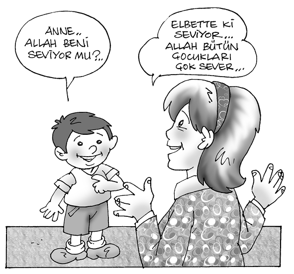
Bu örnekleri çoğaltmak mümkündür. Bütün bunlarda yapılan başlıca hata, çocuğun ruhsal gelişimine uygun olmayacak tarzda Allah’ın insanla ilişkisine yer verilmiş olmasıdır. Üstelik bu bilgiler dinin esaslarına da uygun değildir.
Dinî bilgilerin çocuklara 3-4 yaşından itibaren verilebileceğini, her şeyi yaratan ve idare eden Allah tasavvurunun, çocukların o yaşlardaki anlayışlarına zor gelmeyeceğini söyleyebiliriz. Yeter ki öğretim metodu doğru seçilsin. “Esasen çocuk düşünmeden, şüphelenmeden ve itiraz etmeden kabullenmeye hazır olduğundan, söylenenlere içtenlikle inanır. Buna sadece dil ile ifade etmek denmez, aynı zamanda ruhun da kabulü ve inanışı denir. Doğal olan da budur. Çünkü çocuk inanmakla kendini güçlenmiş ve Allah’a yaklaşmış hisseder. Onda bu duygu uyandıkça, Allah’ın kendine yakınlığı da o ölçüde artacaktır. Böylece çocuk, hayatı iyi, güzel ve yaşamaya değer bulacak o nispette de yaşama gücü artacaktır.”10
Bir yakınını (anne ve babasını) kaybeden çocuğa, “Onu yaratan Allah’tır. Ona şu kadar süre ömür verdi. Şimdi ise öldü, senin gibi bir çocuğu geride bıraktı. Sen iyi, dürüst ve çalışkan bir çocuk olursan, annen ve baban için ileride iyilikler yapabilirsin. Allah da ona senin yaptığın bu iyi davranışlardan dolayı daha güzel nimetler verir.” gibi telkinlerle, ahiret inancı öğretilebilir.
Bu yaşlardaki çocukların kolay inandığını ve kendilerine anlatılanları olduğu gibi kabul ettiklerini biliyoruz. Çoğu kez büyüklere sorular sorması, onun öğrenme merakını, olumlu yaklaşımını gösterir. Anlatılanları dinlemeye ve kabul etmeye hazırdır. Onun için özellikle bu yaşlardaki çocuklara Allah inancı hakkında öğretim yapılırken, doğru, anlaşılır bilgiler vermeye dikkat etmenin yanında, Allah’ın büyüklüğünü, çocuğun sevdiği her şeyi onun yarattığını, iyiliklerin ve güzelliklerin sahibi olduğunu anlatarak işe başlamak gerekecektir.
Bir zaman gelecek ki, çocuk sevmediği şeyleri (ölümü, hastalığı, sakatlığı) da soracaktır. Ancak bunları (karşılaştırıcı bir şekilde) sormaya başlamadan önce anlatmak gerekmez. 6-7 yaşlarından itibaren, çevresinde olup biten ve çocuk için acı verici olayların (bir yakınının ölmesi, sakat kalması gibi olaylar) açıklanmasında da Allah inancı, olumlu anlamda yardımcı olacak, çocuğun acıya katlanmasını da sağlayabilecektir.
Bir yakınını (anne ve babasını) kaybeden çocuğa, “Onu yaratan Allah’tır. Ona şu kadar süre ömür verdi. Şimdi ise öldü, senin gibi bir çocuğu geride bıraktı. Sen iyi, dürüst ve çalışkan bir çocuk olursan, annen ve baban için ileride iyilikler yapabilirsin. Allah da ona senin yaptığın bu iyi davranışlardan dolayı daha güzel nimetler verir.” gibi telkinlerle, ahiret inancı da öğretilebilir. Böylece çocuk için en acı verici olan ölüm olayı olumlu manada bir eğitim aracı olabilir. Belki bu durumlarda çocuklar da insanlar da telkine en müsait durumdadırlar. Böylece Allah inancının tamamlanması da sağlanmış olur. Yani dünya ve ahiret hayatının sahibi olan bir varlığın olduğu, her şeyi yaratanın, besleyip büyütenin O olduğu, zamanı gelince ölenlerin dirilerek sonsuz iyilikler ve güzelliklere ulaşabileceğini anlatarak çocuğa, devamlı olumlu ve güzel motifler kullanarak din eğitimi yapılabilir. Allah inancına bağlı olarak ahiret inancının da kısa bilgilerle öğretimi hazırlanmış olur.
Yukarıdaki olaylarda, alışkanlıkların tesiriyle ve bilmeyerek pek çok yetişkin insanın yaptığı ve yapabileceği hataları gördük. Çocukları korkutarak, birtakım yanlış davranışlardan caydırmak için, Allah’ın ceza vereceğinden bahsediliyor. Yalan söyleyen, annesini üzen ve evi kirleten, arkadaş ve kardeşleriyle geçinemeyen, başkasına ait oyuncak ve eşyaları alan çocukları bu gibi davranışlardan uzaklaştırmak için, Allah’ın hakkında henüz hiçbir bilgisi olmadığı halde, Allah’ın ceza verici ve korkutucu olduğunu, hiç kimsenin önleyemeyeceği kudretiyle insanlara cezalar vereceğini telkin etmek, çok yanlış sonuçlar doğurur. Çocuğun korkak, endişeli, her davranışında tereddütlü bir insan olmasına yol açar. Çocukluğunun güzel hayalleri ve ümitleri zayıflar. Kaldı ki bu türlü bir telkin dinin eğitim esasına da aykırıdır. Ancak bunlar bilinçli bir şekilde yapılmıyor. Birçok yanlış alışkanlığın sonucu olarak ortaya çıkıyor. Öyleyse yetişkinlerin, anne babaların konuşma ve davranışlarını gözden geçirmeleri şarttır. Öncelikle yetişkin insanlar, bu bakımdan kendi bilgilerini ve davranışlarını kontrol etmeleri gerekmektedir.
Dinin temel konusu olan Allah inancı, ilk yaşlarda şöyle verilebilir:
Bütün varlıkları yaratan, insanları diğer varlıklardan daha üstün kılan ve seven,
Özellikle çocukları daha çok seven ve koruyan,
Besleyip büyüten,
Sayılamayacak güzellikte yiyecek ve içecek veren,
Çiçeklerle, hayvanlarla tabiatı dolduran,
Suçları ve yanlış davranışları hemen cezalandırmayıp, yanlışların farkına varmamız, onlardan vazgeçmemiz için zaman tanıyan,
Davranışlarımızın iyi ve güzel olanlarını beğenen ve büyük ölçüde ödüller veren,
Yaptığımız bir iyiliğe karşılık pek çok iyiliğe ulaşmamızı sağlayan, Yüce Rabbimizdir.
Yalan nedir? Ceza nedir? Suç ve günah nedir? Niçin, bunların karşılığında bir ceza verilmesi gerekir? Bu cezaları kim verir? Nasıl verir? Çocuk bütün bunları öğrenmeden önce Allah’ın ceza verici bir kudret olarak öğretilmesi yanlıştır. Zamanı gelince, sevap ve günahın ne olduğunu öğrenince, iyiliğin ve kötülüğün bir karşılığı olması gerektiğini anlayınca cehennemden, günah ve cezadan bahsedilmelidir ki çocuk suç ile ceza arasındaki ilgiyi kavrasın ve Allah’ı sadece ceza veren bir varlık olarak tanımasın.
Duygusal gelişmenin, zihinsel gelişimden daha önce olduğunu biliyoruz.11 Ruh ve beden gelişimini araştıran psikologlar, insanda en temel duyguların; sevgi, bağlanma ve güven duyguları olduğunu, ilk ortaya çıkan duyguların da bunlar olduğunu söylüyor.12 O halde başlangıçta bu duyguların uyanışını esas alarak eğitim yapmak yerinde olacaktır.
Çocuk merkezli eğitim anlayışlarında, çocuğun sevildiğini bilmesinin onda öz güvenin artmasına yardım edeceği ileri sürülmektedir. O halde Allah’ın kendisini sevdiğine bütün kalbiyle inanan çocukların bu inançları, yeri geldikçe kuvvetlendirilmelidir. Özellikle hayatın ilk yıllarında diğer sevgi çeşitlerine göre önem kazanan korumaya dayalı sevgi, çocuğun çevresindekilerle sağlıklı ilişkiler kurmasına yardım eder. Her zaman yanında olan yaratıcının aynı zamanda onu bütün kötülüklerden koruduğunu bilmesinde de fayda vardır.13
Dinin en temel konusu olan Allah inancı, ilk yaşlarda şöyle verilebilir:
Allah;
Bütün varlıkları yaratan, insanları diğer varlıklardan daha üstün kılan ve seven,
Özellikle çocukları daha çok seven ve koruyan,
Besleyip büyüten,
Sayılamayacak güzellikte yiyecek ve içecek veren,
Çiçeklerle, hayvanlarla tabiatı dolduran,
Suçları ve yanlış davranışları hemen cezalandırmayıp, yanlışların farkına varmamız, onlardan vazgeçmemiz için zaman tanıyan,
Davranışlarımızın iyi ve güzel olanlarını beğenen ve büyük ölçüde ödüller veren,
Yaptığımız bir iyiliğe karşılık pek çok iyiliğe ulaşmamızı sağlayan Yüce Rabbimizdir.
O, hatalarımızı görüp tövbe etmemizi istemektedir. Rahmeti ve bağışlaması gazabından fazladır. Ceza vermesinin sebebi; insanlara zulüm ve kötülük yapan, kendine, topluma ve tabiattaki canlı ve cansız varlıklara karşı kötülüğü dokunan, günah işleyen, günahında ısrar eden ve bu davranışlarından vazgeçmeyen insanları günahtan vazgeçirmektir.
İnsan, düşünce ve hayallerden, hatırına gelebilen olumsuz arzulardan sorumlu değildir. Yeter ki, bu gibi kötülükleri yapmasın, söz ve fiille uygulamaya koymasın, başkalarına yansıtmasın. Bir hadiste Peygamberimiz(sav), “Şüphesiz ki Allah(cc), ümmetinin hatırına gelen (günah olan) şeyleri yapmadıkça veya başkalarına söylemedikçe affeder”.14
a.2) Allah Korkusu:
Allah inancına bağlı olarak ilk akla gelen kavramlardan ikisi günah ve sevap oluyor. Bunun sonucu olarak da ahiret inancı ortaya çıkıyor. Sevabı; iyi ve güzel davranışlar, yani kendine, topluma ve tabiattaki her türlü varlığa faydası olan davranışlar olarak; günahı ise, kendine, topluma ve eşyaya zararı olan davranışlar olarak anlatmak, hem dinin esaslarına uygundur, hem de çocukların gelişimine uygun düşecek bir anlatımdır.
Allah inancını çocuklara, sevgi, ümit, bağlanma duygularını geliştirerek öğretmenin ve işe buradan başlamanın yerinde olacağını yukarıda anlatmıştık. Bu tarz bir yaklaşım, çocuğun daha neşeli, ümitli, atılgan ve medeni cesareti yerinde bir kişiliğe kavuşmasına yardımcı olur. Çeşitli durumlarda, kendine güvenini yitirmeden çalışmalarını sürdürebilir. Ancak büyük çocuklara ve yetişkin insanlara korkulacak davranışları da öğretmek yerinde olacaktır. Korkunun ruh sağlığı bakımından mutlaka zararlı olduğu söylenemez. Korku sayesinde insanın hayatta birçok şeyden kendini sakınması devamlı olarak uyanık ve dikkatli olması temin edilebilir. İmkân ve gücünü daha düzenli ve ihtiyatlı kullanarak, sevgi ile korku dengesini kurarak mesleğinde ve işinde başarılı olabilir.15
Bütün mesele her şeyi yerli yerinde bulundurmaktır. Allah sevgisi ve korkusunun, zamanı gelince çocuklara öğretilmesi dengeli bir şekilde gelişmeye yardımcı olabilir. Allah korkusu, kötülüklerden, yanlışlardan uzak kalmaya yardımcı olacaktır. Bir yanlış işi yapmadan önce, yapması gerekeni öğreterek çocuğu o günahtan caydırmak, vazgeçirmek için Allah’tan korkmayı öğretmek lazımdır. Yoksa bir yanlışı ve günahı yaptıktan sonra, Allah’tan korkarak ümitsizliğe, karamsarlığa düşürmek şeklindeki eğitim doğru değildir. Günahı işlemeden önce Allah’tan korkarak sakınmak ne kadar doğru ve yerinde bir davranış ise, günah işledikten sonra, Allah’ın rahmetinden ümidini kesmek de o kadar yanlış bir anlayış olur.16 Nitekim Kur’an-ı Kerim, Allah korkusunun insanı; günahtan alıkoymak için gerekli olduğunu belirtiyor: “... Kim Rabbinin azametinden korkup da kendini kötülükten alıkoymuşsa varacağı yer, şüphesiz cennettir.”17 Çocuğu yanlışa ve günaha düşmekten alıkoymak, bu gibi eğilimlerden başlangıçta caydırmak için Allah korkusu verilebilir.
Çocukluğun ilk döneminde, korkuya yer vermemek daha doğru olacaktır. Aslında öncelikle herhangi bir davranışın doğru ve güzel olanı ısrarla öğretilmelidir. İyi ve güzel davranışları örnekler vererek, uzun süre anlattıktan sonra, çocuk yanlışa yöneliyorsa ve olumlu telkinlerle bu yanlıştan vazgeçmiyorsa, öncelikle anne-baba otoritesinden korkarak vazgeçmesi istenmelidir.
Ancak yukarıda da belirttiğimiz gibi, çocukluğun ilk döneminde, korkuya yer vermemek daha doğru olacaktır. Aslında öncelikle herhangi bir davranışın doğru ve güzel olanı ısrarla öğretilmelidir. İyi ve güzel davranışları örnekler vererek, uzun süre anlattıktan sonra, çocuk yanlışa yöneliyorsa ve olumlu telkinlerle bu yanlıştan vazgeçmiyorsa, öncelikle anne-baba otoritesinden korkarak vazgeçmesi istenmelidir. Çocuklara Allah’ın hiç kimsenin göremeyeceği günahları ve yanlış davranışları da göreceğini, O’ndan hiçbir şeyin saklanamayacağı, bu yüzden, hangi durumda olursa olsun kötülük yapmamaları gerektiği anlatılabilir.
Kura’n-ı Kerim’de Allah korkusu, inanmayanların öbür dünyada karşılaşacakları ceza ile ilgili olarak gösteriliyor, Allah dostlarının ve kâmil müminlerin bu korkulardan uzak olduğu belirtiliyor: “İyi bilin ki, Allah’ın dostlarına korku yoktur. Onlar üzülmeyeceklerdir. Onlar Allah’a inanmış ve ona karşı gelmekten sakınmışlardır. Dünya hayatında da ahirette de müjde onlaradır. Allah’ın sözlerinde hiçbir değişme yoktur. Bu, büyük bir başarıdır.”18
İnsan ruhundaki temel ihtiyaç olan inanma duygusunu (Allah’ın varlığı ve birliğine dayanan) doğru bir bilgiyle doldurmak, bu bilgiyi zamanında, ilgi ve gelişmesi doğrultusunda vermek şarttır. Anne ve babanın çocuğu için yapacağı en büyük yardım, ona Allah inancını öğretmek olacaktır. Cemiyetin yetişkin insanlarının, yetişmekte olan nesillere en büyük yardımı, bu konudaki bilgileri zamanında kazandırmaktır. Pascal’ın dediği gibi “İnsan ruhu biliyor ki, Allah inancı olmazsa, her şey yozlaşır ve bozulur”.19
Kuran-ı Kerim’in öğrettiği İslam’ın Allah inancı, korkudan çok sevgi telkin eden bir anlayıştadır. Ancak bu konu yeterince anlaşılamamıştır. “Batılı ve batının tesirinde kalan gayr-i müslim çevrelerde hâkim olan kanaate göre, Kur’an, Allah hakkında her şeyden çok korku telkin etmektedir. Kısmen, uzun süredir devam eden peşin hükümlerden, kısmen de bizzat bazı Müslüman kelâmcılar tarafından yapılmış olan açıklamalardan, -dolayısıyla geniş Müslüman kitlelerin bu açıklamalara dayanarak takındıkları somut tutumlardan- kaynağını alan bu anlayış, Kur’an hakkında öne sürülen en manasız anlayıştır.”20 İslam’ın öğrettiği Allah inancı, kişinin iç ve dış dünyasında tam anlamıyla Allah’a kul, onun dışında her şey karşısında hür olmasını telkin ediyor. “(Rabbimiz!) Ancak Sana kulluk ederiz ve yalnız Senden medet umarız.” cümlesi, Müslümanın her namazda okuduğu Fatiha Sûresi’nin bir ayetidir, İslam’ın Allah inancı “Allahu ekber” ve “La ilahe illallah” kelimelerindeki iki temele dayanır.
b- Peygamber’e İmanın Öğretimi
Allah’ın varlığına ve birliğine, Hz. Muhammed’in de Allah’ın peygamberi olduğuna inanmak İslam’ın esasıdır. Bu esas her Müslümanın din ve dünya görüşünün hareket noktasıdır. Buna göre din eğitim ve öğretiminde ikinci konuyu Peygamber’e iman teşkil edecektir.
Çocuklara Peygamber’e imanı öğretmek, belki din öğretiminin en kolay konusudur. Çünkü çocuk, somut konuları daha kolay anlar, onun etrafındaki bilgilerle daha yakından ilgilenir. Peygamber inancını öğrettikten sonra onun insanlara öğretmek istediği iman, ibadet ve ahlak gibi konular daha kalıcı bir şekilde öğretilebilir.
Bilindiği gibi çocuklar, hikâyeleri heyecanla dinler. İlkokul çağına gelmiş, okumayı yazmayı öğrenmiş çocukların büyük bir istekle okuduğu kitaplar, geçmişteki kahramanların hayat hikâyeleridir. Hatta birçok yetişkinin bile büyük bir zevkle okuduğu kitaplar, biyografi ve tarih kitaplarıdır. Peygamberler, tarihin kaydettiği en yüce şahsiyetler ve kahramanlar olduğuna göre bunlar hakkında her türlü eğitim aracıyla doğru bilgileri verebiliriz. Peygamberin çocukluğundan başlayarak, bütün hayatı (çocukların anlayabileceği seviyede) anlatılabilir. Hayatı boyunca karşılaştığı olaylar, olaylara karşı takındığı tavır, inananlara gösterdiği şefkat ve incelik, her yaştaki insanla ilişkileri, özellikle çocuklarla ilgili davranışları anlatılabilir.
Peygamber’in çocuklara gösterdiği ilgi, şefkat ve sevgi, örneklerle zenginleştirilerek verilebilir. Peygamberin kendi çocukluğu nasıl geçmiştir? Ne gibi olaylarla karşılaşmıştır? Çocukluğundaki davranışları nasıldı? Bu ve bunun gibi konulara genişçe yer verilebilir. Peygamber olduktan sonra çocuklarla kurduğu ilişkilere ayrıntılı bir şekilde yer vermek, çocuklarda Peygamber sevgisinin uyanması ve pekişmesi bakımından çok faydalı olacaktır.
Çocuklara Peygamber inancının nasıl öğretilebileceği konusunda Peygamberimizin çocuklarla ilgili bazı davranışlarını ve tavsiyelerini ifade etmekte yarar vardır:
“Bir adam Peygamber Efendimizin yanında oturuyordu. Bir ara yanlarına adamın erkek çocuğu geldi. Adam çocuğu öpüp dizleri üzerine oturttu. Biraz sonra yanlarına adamın bir de kız çocuğu geldi. Adam onu da yanına oturttu. Peygamberimiz adamı; niçin ikisini bir tutmadın diye kınadı.”21
Adamın biri Peygamberimizin yanına geldi. Beraberinde bir çocuğu vardı. Adam ikide bir çocuğu kucağına alıyordu. Peygamber Efendimiz adama:
– Sen ona acıyor musun? dedi, adam:
– Evet, dedi.
Peygamber Efendimiz: “İşte sen buna nasıl acıyorsan, Cenab-ı Allah, senin bu acımandan daha çok sana acır.” buyurdu.22
“Bir gün Peygamberimiz(sav) minberde hutbe okurken küçük yaştaki Hz. Hüseyin, üzerinde uzun bir hırka ile mescide girdi. Ayağı takılıp yüz üstü yere düştü. Peygamber Efendimiz onu yerden kaldırmak için hemen hutbesini kesip minberden indiyse de, onun indiğini gören ashap daha önce davranıp onu yerden kaldırdılar ve Peygamberimize getirip verdiler.”23
“Rasulullah(sav) namaz kılarken secdeye varınca Hasan ve Hüseyin gelip sırtına binince secdeyi uzattı. Oradakiler:
– “Ya Rasulallah secdeyi uzatmış olmadınız mı?” dediler. Peygamberimiz de:
– “Oğlum sırtıma binince acele etmekten çekindim.” buyurdular.24
“Peygamber Efendimiz, yanında Ebü’l-As’ın kızı Umame olduğu halde yanımıza geldi. O halde namaz kılmaya başladı. Rüku ederken onu yere bırakıyor, kalktığı zaman onu da kaldırıyordu”.25
Namaz gibi huşu ve huzur gerektiren ibadet sırasında bile, Peygamberimizin çocuklara karşı davranışlarını bu hadislerde açıkça görüyoruz.
Peygamberimiz Hz. Hasan’ı öpüyor, seviyordu. Orada hazır bulunan Akra b. Habis:
“Benim on çocuğum oldu, hiçbirini öpmüş değilim.” dedi. Peygamberimiz(sav) “İnsanlara karşı şefkat duygusu olmayan kimseye Allah merhamet etmez.” buyurdu.26
“Bir kadın iki küçük kızı ile birlikte Ayşe’nin yanına geldi. Ayşe, kadına üç tane hurma verdi. Kadın kızlarından her birine birer tane verdikten sonra elinde kalan bir taneyi kendi yemek istediyse de, çocukların kendisine baktığını görünce onu da ikiye bölerek onlara verdi. Kadın kalkıp gittikten sonra Peygamberimiz geldi. Hz. Ayşe, kadının davranışını kendisine anlattı. Rasulullah: “Kadın bu davranışı ile cenneti hak etmiştir.” buyurdu.27
Hz. Peygamber, “Uzun kılmak niyetiyle namaza dururum, derken bir çocuk ağlaması işitir, annesine sıkıntı vermesin diye namazı kısa keserim.” diyor.28 Peygamberimizin huzurunda geçen bir konuşmayı Hz. Ayşe naklediyor: “Bir defasında bedevilerden bir grup Rasulullah’ın huzuruna geldi. Bunlar bir vesile ile “Çocuklarınızı öper, sever misiniz?” dediler. Sahabiler, evet, dedi. Bedevîler: “Fakat Allah’a yemin olsun ki bizler öpüp sevmeyiz.” dediler. Bunun üzerine Peygamberimiz: “Eğer Allah sizin gönüllerinizden rahmet ve şefkati çıkarmışsa ben ne yapabilirim?” buyurdu.”29
Bütün bu davranışlar ve tavsiyeler, çocukların, büyükler için nasıl bir ilgi noktası olduğunu gösteriyor. Maddi ve manevi bakımdan çocuklara gerekli imkânları hazırlamak, onların iyi insan ve iyi Müslüman olması için gerekli ön tedbirleri almak şarttır. Çocuklarla ilgili bu tavsiyeleri yapan peygamberleri her yaştaki insana anlatmak, sevdirmek, O’nun gösterdiği yolda gitmelerini istemek eğitimcinin işini kolaylaştıracaktır. Çocuklara din eğitimi verirken, peygamber inancını öğretirken, onun çocuklarla ilgili görüşlerini dikkate almak, hem yetişkinler, hem de çocuklar için faydalı olacaktır.
Peygamberimizin çocuklarla ilgili bu davranış ve tavsiyelerini göz önünde bulundurarak, O’nu sevmeyi, O’na bağlanmayı ve O’na imanı, küçük gönüllere yerleştirebilirsek, çocukların büyük hedeflere ve her alanda yüksek ufuklara yönelmesine yardımcı olabiliriz. İnsanlık tarihi boyunca prensip ve ölçülerin bulunmasında en büyük rehberler peygamberler olmuştur. Onların gösterdiği esasları öğrenerek yaşamak ve bunları öğretmek, hem kolaydır hem de başat bir görevdir.
Çocukların birçok iyi ve güzel davranışla donanmasını, kötü ve yanlış olan hareketlerden uzaklaşmasını istiyorsak, bunları yerine getiren, hiçbir davranışta yanlış ve kötülüğü olmayan, her iş ve sözünde en güzel ve en isabetli olanı yapan peygamberlerin güzel ahlakını öğretmek şarttır.
c) Ahirete İmanın Öğretimi:
Din eğitim ve öğretiminde, pozitif bilimlerin açıklamalarına göre izahı en güç hatta imkânsız gibi görünen bir konu varsa o da ahirete imandır. Hâlbuki ahirete iman, bütün kutsal kitaplarda itikadın temel esaslarından biri kabul edilmektedir.
İtikadî hükümlerden ilahiyat ve nübüvvet konuları, akli delillerle; melaike ve ahirete ait hükümler de (akla aykırı olmamak şartıyla) ayet ve hadislerle anlaşılır. Onun için ahirete iman, Allah ve Peygamber’in bildirdiği şekilde olur. Bununla beraber, insanlarda, içinde bulunduğu şartların sonucu, vazgeçilmez bir ebedî âlem özlemi vardır. Daha açık bir ifadeyle ahirete iman, öldükten sonra dirilme, yaptığı bütün işlerin hesabına göre, ebedî saadet arzusu, sevdiği, beğendiği bütün iyilik ve güzelliklerin en ileri derecede devam etmesi isteği, insanların en derin ve vazgeçemediği arzulardır. İnsanın bu köklü ve vazgeçilmez arzularını şair Abdülhak Hamit (Makber’de) şöyle anlatıyor:
“İnsan olamaz zevale kail,
Zira yaşamaz o hâle kail”
İnsan “Bugün varım, yarın yok olacağım.” düşüncesiyle tatmin olamaz. Ebedî olarak yaşamak, sevdikleriyle, güzellikleriyle, iyiliklerle sonsuzluğa ulaşmak ister. Ruhun namütenahiyi (sonsuzluğu) aradığını, ancak düşünce ve hayalini bununla tatmin edebildiğini görüyoruz. Çok sevdiği bir insanı; eşini, çocuğunu, anne ve babasını, dostunu kaybeden bir insanın bir gün gelip onunla ebedî olarak yaşayacağını düşünmesi, buna inanması, ona, yaşama sevinci verir. Hayata daha anlamlı bakar. Hayatta karşılaştığı olumsuz şartların, haksızlıkların, zulüm ve adaletsizliklerin, çaresiz hastalık ve sakatlıkların ıstırabına, ahiret inancıyla direnme ve sabretme gücünü bulur. Bu gibi dayanılmaz sıkıntılar, yine kendi gibi insanlar aracılığı ile gelmişse, haksızlığa ve zulme uğramışsa ve bunu kendi gücüyle giderme imkânı bulamamışsa, bu hakkının mutlaka alınacağını bilmek, hiç kimsenin yaptığının yanına kalmayacağına inanmak, insan için en büyük tesellidir. Ya da bu gibi istenmeyen durumlar (sakatlıklar, zorluklar vb.) yaratılıştan geliyor ve insanların yapacağı hiçbir şey kalmıyorsa, ahiret inancı ve bunun doğuracağı sabır, insanın en büyük sığınağı olur.
Tarih boyunca yapılan pek çok açıklamaya rağmen içinden çıkılamayan konulardan biri de, bazı insanların, bir gayeye sarfettiği büyük çabalara rağmen ulaşamayışı, bazılarının da hiçbir gayret ve çaba göstermeden birçok alanda başarılı olmasıdır. Dünya hayatında sayısız örnekleri olan bu gibi durumlarda insanlar, olayları kendi beceriksizliklerine bağlayarak ya da haksızlığa uğradıklarına hükmederek izah ederlerse, olayları bu anlayışla değerlendirip davranışlarına buna göre yön verirlerse, daha kötü duruma düşer ve olayların altında büsbütün ezilirler. Kötümser, karamsar ve muzdarip bir hayatın içinde sürüklenip giderler.
O halde insanlara bütün bu olayların hikmetini öğretecek, Allah’ın takdirini anlatacak, O’na sığınarak kurtuluşun yolunu gösterecek, bu dünyada olmaz ise öbür dünyada yaptıkları iyiliklerin karşılığını göreceğini anlatacak bir ahiret inancı öğretilmelidir. İnsan ruhundaki bitmez tükenmez arzularla bu dünyadaki sınırlı tatminlerin çeliştiği herkesçe bilinmektedir. Ayrıca eşitsizlikler ve talihsizliklerle dolu bir dünyada yaşıyoruz. Birtakım yanlışların ve kötülüklerin “görünüşte” başarılı olması, insanı zorunlu olarak tam adaletin, herkese layık olduğu karşılığın verileceği bir ebedî hayatın olması gerektiği inancına götürüyor. İşte o zaman, içinde bulunduğumuz şartlar nasıl olursa olsun devamlı olarak iyi ve güzel olan hareketlerin peşinde koşabiliriz.
Bir insanın dünya görüşü, çocukluğundan itibaren sağlıklı bir ahiret inancıyla tamamlanırsa, kişi her türlü olayı doğru yorumlamayı öğrenir ve üzerine düşen işi zamanında yapmayı bilir.
Konuya psikoloji açısından bakıldığında gerek “öldükten sonra dirilmeye” gerekse “ahiret ve hesap gününe” iman, insanı ikna edip gönlünü yatıştırıcı en etkin vasıtadır. Ruhsal ve manevi yaptırımın meydana getirdiği idrak, bilinç ve buna bağlı olarak ortaya çıkacak her türlü tutum ve davranış, maddi yaptırımlardan çok daha etkilidir.
Bir insanın dünya görüşü, çocukluğundan itibaren bu şekildeki ahiret inancıyla tamamlanırsa, kişi her türlü olayı doğru yorumlamayı öğrenir ve üzerine düşen işi zamanında yapmayı bilir. İnsan bir kere Allah’ın iradesine boyun eğip, onun daima en iyisini isteyeceğine inandı mı, giriştiği her işte başarılı olup olamayacağının önemi kalmaz. Yalnız yaptığı işlerde kendi üzerine düşeni arayarak bulur, geçmişteki tecrübelerinden faydalanarak her teşebbüsünde daha az hatalı olmaya çalışır. Başarılarını herkesle paylaşma zevkini tadar. Bütün canlılar için kaçınılmaz olan ölüm gerçeğini de, ebedî hayat düşüncesiyle doğal karşılar. Aslında insanı, özellikle inanmayan insanı, en çok tedirgin eden olay ölümdür. Ölümle hayatın sona ereceğini düşünmek, insanı büsbütün tedirgin etmekte ve onu boşlukta bırakmaktadır.
Bir doktorun görüşüne göre, “Ölüm meselesine ilim, şimdilik cevap verememektedir. İlim henüz ruh ile beden arasındaki ilişkiyi, beynin çözülmesiyle ruhun da çözülüp çözülmediğini bilemiyor. Ruhun mahiyetini de bilemiyor. Belki de bunu asla bilemeyecektir. Zira ruh, canlı madde içinde olmakla beraber zaman ve mekân âleminin dışında ve bu şekliyle ilim alanının dışındadır... Bu yüzden ölüm ve sonrasına ilmin yeterli açıklama getirmesi söz konusu olamaz.
Dinin ölüme verdiği anlam, ilminkinden çok daha başkadır. Dine göre ölüm hayatın sonu değil, ruhun bedenden ayrılarak Allah’a kavuştuğu yeni bir hayatın başlangıcıdır. Tarih boyunca birçok insan buna inanarak huzur içinde bu hayata gözlerini yummuştur.
Din, insana yalnız beden ve ruhun ebedî âlemde ölmezliğini değil, eğer hak kazanmış ise, Allah’a kavuşacağını ve sonsuz saadete ulaşacağını da vadeder. Ölümün bilinmezliği karşısında insanın bunaltısına cevabı, ilkiyle karşılaştırılamayacak derecede daha tatminkârdır”.30
Ahirete iman öğretiminde, ruhun bu eğilimleri dikkate alınmalıdır. Ayrıntıya girmeye, cennet, cehennem, oradaki mükâfat ve ceza şekilleri hakkında uzun uzadıya bilgiler vermeye ihtiyaç yoktur. Özellikle yetişmekte olan nesiller için bu gibi konuları ayrıntılı bir şekilde anlatmak, tatmin edici açıklamalar bulmak, özellikle çocukların anlayacağı şekilde izahlar bulmak, mümkün olmayacaktır.
Yukarıda da belirttiğimiz gibi, ahirete iman konusu, ayet ve hadislerle anlaşılan ve inanılan bir konudur. Bunun için de ayet ve sahih hadislerin dışındaki açıklamalara yer vermemek gerekir. Ancak insanın dünyada olup biten olaylar karşısında ebedî âlem özlemi içinde olduğunu söylemiştik. İşte bu temel nokta göz önüne alınarak, insanın ahirete inancı pekiştirilir ve karşısına çıkacak bütün olumlu ya da olumsuz olaylara karşı isabetli tavırlar alması sağlanabilir.
Ahirete iman konusu ümit ve yaşama sevincinin artmasına yardımcı olacak şekilde anlatılmalıdır. Sevdikleriyle, güzelliklerle, ruhsal ve bedensel bakımından haz duyduğu, bütün isteklerine ebedî âlemde kavuşacağını düşünmek, bunu kabul etmek ve beklemek insana büyük destek olacaktır. Bu dünyada neler elde etmek istiyorsak, bütün bunlara temiz ve helâl olmak şartıyla ulaşmak için çalışan mümin insana ahiret inancı, öbür dünyada bütün güzelliklere kemaliyle ulaşacağını anlatır. Böylece hayal dünyasında düşünebileceği her şeye kavuşabilme ümidini korur ve bilinçaltına taşıyamayacağı kadar çok isteğin birikmesini önler.
Ayrıca yerinde ve doğru bir şekilde anlatılacak ahiret inancı, bencil duyguların kontrol altına alınmasını öğreterek insanlığın gelişmesine yardımcı olur. “Din, öteki dünyadaki son derece akli olan bir yaptırım kuvvetiyle, fertlerin menfaatleriyle toplumsal menfaatleri dengeliyor. Bu demektir ki insanlığın evrimi sadece bencil sebeplere bağlı değildir. Fakat daha çok dinî inancına borçludur”.31
İnsanoğlu, istek ve arzularının boşa çıkacağını düşünerek mesut olamaz. Bu durumlarda, huzursuz, huysuz ve hırçın olabilir. Her şeyi bu dünyada gerçekleştirmesi de helâl ve temiz olmak şartıyla mümkün olamayacaktır.
O halde (meşru sınırlar içinde kalarak), hayal veya rüya âleminde aradığı ve bulduğu pek çok zevkin, güzelliğin, hoşuna giden olay ve davranışlarının üzerindeki etkilerine bir açıklama getirmek, insana yapılacak en büyük yardım olacaktır. İşte bunun en inandırıcı ve tatmin edici açıklaması, ahiret inancında mevcuttur. İnsan, yaradılışı icabı dünyada ulaştığı bir nimeti sevmekte, ondan zevk ve haz duymakta, ancak bunun kemaline ulaşamadığından, geçici ve sınırlı tatminler kendisini ürkütmektedir. Bunların kaybolmasından, yok olmasından, bir gün gelip zevk alamayacak olmasından endişeye düşmektedir. İşte insanı bu boşluktan kurtaracak olan şey, ebedî âlemin sonsuz haz ve saadetine ulaşmak arzusu ve ümididir.
Aslında dünyadaki nimetlerin en güzel ve kemaliyle yok olmadan tadılması isteği, insanı ahiret anlayışına hazırlıyor. Dünyadaki süs ve güzellikleri tadan insan, daha güzelini daha büyüğünü sürekli istiyor ve arıyor. Bunu da ancak ahirette bulabileceğini kolaylıkla kabul ediyor. Nitekim Kur’an-ı Kerim bu konuyu şu şekilde açıklıyor: “Size verilen herhangi bir şey, dünya hayatının bir geçimliği ve süsüdür. Allah katında olan daha iyi ve devamlıdır. Akletmez misiniz?”.32 İşte insan bunu aklederek, daha iyi, güzel ve devamlı olanı özleyerek, düşünerek “ahirete iman”a ulaşır. Yeter ki din eğitimcileri zamanında yol göstermiş olsun.
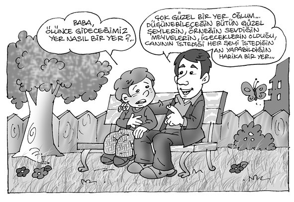
Din eğitiminde ahirete iman konusu, insanın özellik ve eğilimlerine göre işlenirse çok geniş imkânlar ve olumlu sonuçlar doğurur. Sonsuz kemal ve güzelliğe ulaşmak için, sürekli çaba ve gayret sarf etmesine yardımcı olur.
İnsanlara iyilik, güzellik ve doğruluk istikametindeki konularda devamlılık sağlarken, kötülük, çirkinlik ve yanlışlıklar karşısında direnme ve dayanma gücü sağlar. Nefsine ve isteklerine meşru olan tatmin yollarını gösterir. Düşebileceği geçici başarısızlık ve tatminsizliklerden dolayı bunalıma düşmesini önler.
Ahirete inanan ve bu inancı samimiyetle gücünün yetebildiği kadar yürüten insan kesinlikle bilir ki: Bir gün gelip Allah kendisine: “Ey huzur içinde olan can! O, senden, sen de O’ndan razı olarak Rabbine dön. Artık has kullarının arasına katıl, onlarla birlikte cennetime gir.”33 diyecektir. Bu inanç ve anlayışı öğretmek, ahirete inancın esasını teşkil etmelidir. Bu ayetin ışığında, nefsin tam anlayışla tatmine ulaşabilmesi, bu dünyada ne kadar nimet ve bolluk içinde olursa olsun mümkün olamayacaktır. Çünkü bu dünyanın nimetleri geçicidir ve hayatın her döneminde aynı tadı ve zevki vermeyecektir.
En basit tecrübe ile midesinden rahatsız bir insan için güzel bir yiyecek yoktur. Gözleri görmeyen bir insana baharın güzellikleri yoktur. Benzeri tatminsizlikler pek çok insanda ömür boyu var olduğu gibi esas olarak hayatın son yıllarında söz konusu olacaktır. Hiçbir insanın bu dünyada nefsin isteklerini sonuna kadar ve hayatının her döneminde tatmin etmesi mümkün olmuyor. Daima bir boşluk, bir istek devam edip gidiyor. Bir nimete ulaşan insan kısa bir süre sonra daha iyisini, daha güzelini arıyor. Pek çok insana nasip olmayan iyilik ve güzelliklerle tatmin olamıyor, daha ilerisini, daha iyisini ve daha güzelini arayıp duruyor. Ta ki tam güzellik ve iyiliğe kavuşsun. İşte bu tatmin şeklini ancak İslam’ın öğrettiği ahiret inancı verebiliyor. Ahirete iman öğretiminde dikkate alınacak önemli noktalardan biri de bu olmalıdır. Nefsin tam anlamıyla tatmin isteğinin ancak ahirette karşılanabileceği dikkate alınarak, insana dünyadaki nasibini unutmadan ahirete hazırlanması öğretilmelidir. Dünyada ve ahirette de iyilik istemenin ve kazanmanın yolları gösterilmelidir.34 Bunlar ise dünyadaki nasibini unutmayarak, ahiret yurdunu da gözeterek Allah’ın verdiği nimet ve iyilikleri başka insanlarla da paylaşarak ve yeryüzünde bozgunculuk yapmadan35 yaşamanın öğretimiyle sağlanabilir.
d) Meleklere İman Öğretimi:
İslam’ın öğrettiği iman esaslarından biri de meleklere inanmaktır. Duyularla idrak edilemeyen, mahiyetlerini ve sayısını Allah’tan başka hiç kimsenin bilemediği varlıkların olduğuna inanıyoruz.
Kur’an-ı Kerim’de, “O sizi karanlıklardan nura çıkarmak için üzerinize melekleriyle beraber salat getiren (dua ve rahmet eden)’dir. O, müminleri çok esirgeyicidir”.36 Müminlerin esirgenmesi, yanlışlardan kurtulması, ruh ve beden sağlığını koruyarak hayatını sürdürebilmesi için meleklerin yardımcı olacağı belirtiliyor.
Sıkıntılı durumlarda Allah’ın melekleriyle yardımcı olacağı,37 insana her durumda ümidini yitirmeden azimle çalışması gerektiğini öğretir. Meleklere iman, insanın doğa olaylarıyla olumlu ilişkiler kurmasına yardımcı olacağı gibi, nefis tezkiyesi, kalp temizliği ve Allah’a samimi kullukta sürekliliği geliştirir. Meleklere inanmak ve onlarla yakınlık kurmak, ruhun yücelmesine ve insanın yaratılış gayesindeki üstünlüğün gerçekleşmesine yardımcı olur. Bunun için, Kur’an’da “İyilik, Allah’a, ahiret gününe, meleklere iman edenin iyiliğidir.”38 buyurulmaktadır.
Bu âlem şüphesiz ki akıl ve duyularla anlaşılmaz, ancak vahiyle bilinir. Yalnızca buna inanmak, insanı güçlü, azimli, ümitli kılar. İnsan, yakın bir kontrol içinde bulunduğunu düşünerek, davranışlarını, daha tutarlı hâle getirir. Eşya ve olayların bilinmeyen yönüne iman ışığında yaklaşarak, boşlukta kalmaktan, büsbütün cevapsız ve bilgisiz kalmaktan kurtulur. Zira kâinatta öyle olaylarla karşılaşıyoruz ki, maddi sebeplerle açıklamak imkânsız oluyor. Bunları tesadüfle açıklamak mümkün olmadığı gibi, tatmin edici de olamıyor.
İşte burada Allah’ın, melek, cin, şeytan gibi varlıkları yarattığını düşünmek ve bunların varlığına inanmak, düşüncedeki boşluğu gideriyor. Pozitif bilimin sonuçlarıyla anlaşılamayan pek çok olayın meçhul olması, boşlukta kalması giderilmiş oluyor. Meleklere ve cinlere inanmak, insana eşya ve olaylar hakkında hiçbir meseleyi boşlukta bırakmadan açıklık getiriyor.
Bu gibi varlıklara iman, insan düşüncesini daraltmaz, pozitif bilimlere olan güvenini sarsmaz. Tam aksine daha yüksek ufuklara, daha bilinmeyen konulara yönelmesine yardımcı olur. Günümüzde insanların en çok ilgisini çeken konular bunlar olmaktadır.
Allah, melek ve şeytan denilen iki zıt ve değişik mahiyette varlık yaratmıştır. Bunların varlığı ve insanlarla olan ilişkileri Kur’an’da yer yer açıklanmıştır. Bunları akait, kelâm ve tefsir kitaplarından genişçe öğrenebiliriz. İmanın bu esasını öğretim konusu olarak ele aldığımızda nasıl açıklamalıyız? İnsana bu bilgileri öğretirken daha önce öğrendikleriyle çelişkiye düşmeden daha ileri ufuklara götüren bilgiler şeklinde vermeliyiz. Duyularla, akılla kavranamayan bir âlemin olduğu bugün insanların çoğu tarafından kabul ediliyor. İşte bu âlemi, Kur’an’ın ve sahih hadislerin bildirdikleriyle algılamak ve ayrıntıya girmeksizin açıklamak yerinde olacaktır.
Meleklere ve onun gibi mahiyetini tam olarak bilemediğimiz varlıkların olduğuna inanmak, insanı ilim dışı düşünen, akıl ve mantıkla çelişen bir kişi hâline getirmez. Tam aksine his ve akılla ulaşabileceği bütün bilgilere ulaştıktan sonra açıklanamayan, boşlukta kalan ve pek çok hayal ve uydurma yoluyla doldurulmaya çalışılan bilgi alanını, doğru haber veren peygamberlerin öğrettikleriyle açıklamak yerinde olacaktır. Meleklerin ve şeytanların insanlarla ilişkisinde eğitim bakımından bazı önemli ipuçları bulabiliriz. İnsan, günah işlemekten münezzeh olan melekler gibi yaratılmamıştır. Aksine iyiliğe, kötülüğe, doğruya, yanlışa, hayra ve şerre, taate ve ma’siyete, takva ve fücura kabiliyetli olarak yaratılmıştır. “Nefse ve onu düzenleyene, sonra da ona iyilik ve kötülük kabiliyeti verene andolsun ki, kendini arıtan saadete ermiştir. Kendini fenalıklara gömen kimse de ziyana uğramıştır.”39
İnsan yeryüzünde Allah’ın halifesi olduğundan, nefsinde iyilik, doğruluk, hayır, itaat ve takva yönlerini geliştirmek ve pekiştirmek durumundadır. Meleklerin, Allah’ın izniyle bu konuda yardımcı olacağını düşünmesi, insana bu yoldaki gayretlerinde manevi bakımdan destek olur. Böylece yüce Allah’ın kendisinden istediği kâmil bir mümin olabilir.
İnsan, herhangi bir sebeple ayağı sürçerek bir kötülüğe, günaha düştüğü zaman ümitsizliğe düşmemeli, Hz. Adem’in önünde açılan tövbe yolunu düşünmelidir. İnsanlığın babası ve ilk peygamberi Hz. Adem’i şeytan vesvese yoluyla hataya düşürmüş, fakat Hz. Adem, Rabbinden bellediği kelimelerle dua ederek, tövbe ederek şeytanın düşürdüğü yanlıştan kurtulmuştur. Kur’an-ı Kerim ilk insana, meleklerin ve şeytanın ilişkilerini bize uzun uzun anlatırken hepimizin başına gelebilecek bu gibi olaylardan nasıl çıkabileceğimizi, kurtuluş yolunun ne olduğunu gösteriyor.40 Şeytanın vesvesesiyle yanlışa düşen Hz. Adem’in tevbe yolundan geçerek, daha büyük ve faziletli bir hayata yöneldiğini anlatıyor. Böylece insanın aklını yerli yerinde kullanabildiğinde sürekli olarak şeytanın tesirinde kalmayacağını, geçici bir zaman ayağı sürçse bile, yeniden sağlam bir yola girebileceğini gösteriyor.
e) Kitaplara İmanın Öğretimi:
İman esaslarından biri de, Allah tarafından peygamberlere kutsal kitapların gönderildiğidir. Yetişmekte olan nesillerimize Kuran-ı Kerim’i tanıtmak, onun okunuşunu öğretmek, kısa sûrelerinin manasını anlatmak, din eğitiminin başarısı açısından çok önemlidir.
Çocukluğun ilk yıllarında, ezan, Kur’an, cami gibi dinî unsurların kalıcı ve derin etkileri olur. Bunları yerli yerinde kullanmak, çocukları dine yaklaştırır. Güzel sesle okunan bir ezanı ve Kur’an-ı dinlemek, onların manevi ve estetik zevklerinin gelişmesine yardımcı olur. Mümkünse mübarek gün ve gecelerde, aile büyükleri tarafından huzur içinde, yüzünden okunacak Kur’an-ı Kerim’in derin ve kalıcı tesirleri olacaktır. Bu imkân yoksa, kasetlerden, CD’lerden, radyo ve televizyondaki programlardan faydalanmak suretiyle Kur’an-ı Kerim’i dinlemek, manası üzerinde düşünmek, bütün aile fertlerinin bunu ilgiyle takip etmesi, çocuklar için kalıcı tesirlere yol açar.
Memleketimizde bu konuda bazı güzel âdetler vardır. Her gelin kızın çeyiz eşyası arasında Kur’an-ı Kerim konacak, itina ile hazırlanmış bir çanta bulunur. Bunun içine yerleştirilmiş Kur’an, evlerin en güzel köşesinde saklanır. Ancak gönül ister ki, belli bir yaşa ulaşmış her kız ve erkek Kur’an okumasını da öğrenmiş olsun.
Evlenen gençlere hediye olarak Kur’an-ı Kerim de verilmelidir. Bunu, onları tanıyan ya da akrabası olan bir din görevlisi yahut ailenin en büyüğü verirse daha anlamlı olur. Bir ilçenin, ilin müftüsü düğünlere davet edilmişse hediye götürmesi, ailevi bir yakınlığı da var ise, güzel birkaç cümleyle Kur’an meali hediye etmesi, çok yerinde bir davranış olur.
Çocukluğun ilk yıllarında, ezan, Kur’an, cami gibi dinî unsurların kalıcı ve derin etkileri olur. Bunları yerli yerinde kullanmak, çocukları dine yaklaştırır. Güzel sesle okunan bir ezanı ve Kur’an-ı dinlemek, onların manevi ve estetik zevklerinin gelişmesine yardımcı olur. Mümkünse mübarek gün ve gecelerde, aile büyükleri tarafından, huzur içinde, yüzünden okunacak Kur’an-ı Kerim’in derin ve kalıcı tesirleri olacaktır.
Kur’an-ı Kerim’i saygı ile ve abdestli olarak ele alıp okumak, çocukların da sıkılmayacağı kadar bir süre dinlemesini istemek, onların dine yönelmesinde çok tesirli olur.
Yahya Kemal, atalarımızın çocuklarının Kur’an’ın etkisinde kalarak dinin iklimine girdiğini şöyle anlatıyor: “Kendi kendime diyordum ki, Şişli, Kadıköy, Moda gibi semtlerde doğan, büyüyen, oynayan Türk çocukları milliyetlerinden tam bir derecede nasip alabiliyorlar mı? O semtlerdeki minareler görülmez, ezanlar işitilmez, ramazan ve kandil günleri hissedilmez, çocuklar Müslümanlığın çocukluk rüyasını nasıl görürler?”.
İşte bu rüya, çocukluk dediğimiz bu Müslüman rüyalarıdır ki, bizi bir millet hâlinde tutuyor. Bugünkü Türk babaları havası ve toprağı Müslümanlık rüyası ile dolu semtlerde doğdular, doğarken kulaklarına ezan okundu, evlerin odalarında namaza durmuş ihtiyar nineler gördüler, mübarek günlerin akşamları bir minderin köşesinden okunan Kur’an’ın sesini işittiler. Bir raf üzerinde duran Kitabullah’ı indirdiler, küçücük elleriyle açtılar, gülyağı gibi bir ruh olan sarı sahifelerini kokladılar. İlk ders olarak Besmele’yi öğrendiler, kandil günlerinin kandilleri yanarken, ramazanların, bayramların topları atılırken sevindiler. Bayram namazlarına babalarıyla gittiler, camiler içinde, şafak sökerken tekbirleri dinlediler, dinin bir merhalesinden geçtiler. Hayata girdiler, Türk oldular”.41
Evlenen gençlere hediye olarak Kur’an-ı Kerim de verilmelidir. Bunu, onları tanıyan ya da akrabası olan bir din görevlisi yahut ailenin en büyüğü verirse daha anlamlı olur. Bir ilçenin, ilin müftüsü düğünlere davet edilmişse hediye götürmesi, güzel birkaç cümleyle Kur’an meali hediye etmesi, çok yerinde bir davranış olur.
Atalarımız eskiden çocuklarını hayata hazırlarken dinin temelini teşkil eden ezan ve Kur’an’ı öğretiyorlar, böylece onlara dinin manevi mirasını tanıtıyorlardı. Günümüzün şartlarında, daha çok sosyal, ekonomik ve kültürel sıkıntılar içinde yetişen, bu ortamın etkisiyle ruh ve beden sağlığını koruyamayan çocuklarımıza bu gibi telkinleri daha dikkatle yapmalıyız.
f) Kaza ve Kadere İmanın Öğretimi:
Hz. Peygamber imanı anlatırken, hayır ve şerrin takdirinin Allah’a ait olduğunu bildirir. Bu konunun kelam ilmindeki açıklamalarına girmeksizin, insanın hürriyeti, sorumluluğu ve Allah’ın takdirinin birlikte anlaşılmasına, bu konunun din öğretiminde nasıl ele alınması gerektiğine kısaca temas etmek istiyoruz.
İslam anlayışına göre kâinattaki her şeyin var olmasını Allah istemiştir ve her şeyi yaratmıştır. Varlık ve oluş Allah’ın bir lütfudur. İnsan da Allah’ın yaratığıdır. Allah, yerdekini, göktekini, melekleri, cinleri, Güneşi, Ayı, yıldızları, ağaçları, meyveleri, bitkileri, her çeşit hayvanları yaratmıştır ki, “Onlardan bazısı karınları üstünde (sürünerek) yürür. Onlardan bazısı iki ayağı üstünde yürür, kimi de dört ayak üstünde yürür. Allah dilediğini yaratır. Allah şüphesiz her şeye kadirdir”.42 Kur’an-ı Kerim’in pek çok ayetinde belirtilen Allah inancı, Allah’ın iradesi, ilim ve tekvîn (yaratma) sıfatlarıyla ilgilidir.
Aslında tarih boyunca, bütün dinî, felsefî inanç ve düşünce tarzlarında, Allah’ın kâinatı, bu arada insanı da yarattığı konusu kolaylıkla anlaşılmaktadır. Fakat insan yaratıldıktan sonra, yeryüzündeki hayatını sürdürürken yaratanı ile büsbütün ya da kısmen ilişkisini keser mi ya da sürdürür mü? İşte bu noktada pek çok felsefî ve dinî görüşler ortaya çıkmıştır.
İslam’dan önceki devrin hayat görüşünün merkezinde, karanlık ve esrarengiz bir zaman düşüncesi bulunmaktadır. Bu karanlık düşünceye göre hayat, bu dünyadan ibarettir. Öldükten sonra başlayacak bir ebedî âlem inancı olmadığı gibi, bu dünyada beşikten mezara kadar insanı pençesi altında tutan kabaca zaman diyebileceğimiz, bir otoritenin her türlü ıstırap, felaket ve sefaletiyle karşı karşıya kalınmaktadır.
Hiç kimse, en yiğit, en zengin, en zeki olanlar bile zamanın -ne olduğu bilenemeyen bu esrarengiz otoritenin- kör ve alabildiğine hırslı baskısından kurtulamaz. İnsanlar birçok felaketle, hastalıkla, açlık ve sıkıntıyla, aradığını bulamayarak, ıstıraplarla iç içe yaşamak zorundadır. İnsan bu kaderi yaşamak, başına geleceklere, kim tarafından verildiğini bilemeden katlanmak zorunda kalacaktır. Bu durumdaki insan, bu meçhul otoritenin altında, karamsar ve ümitsiz bir dünya görüşüne sürüklenmektedir.
İslam dışı bir başka anlayışı da şöyle özetleyebiliriz, insanın hayattan ayrılması önceden tayin edilmiştir. İnsan buna zorlanmıştır. Herkesin ölümle karşılaşacağı belirli bir gün vardır. O belirli süre dolunca ne kadar küçük ve cılız olursa olsun herhangi bir şey, en güçlü insanı bile öldürebilir. Bundan hiç kimse kaçamaz. Bütün bunlar tabiatın önceden belirlenmiş bir disiplin üzerine kurulmuş olmasının sonucudur. Her canlı doğar, gelişir ve zamanı gelince ölür, yok olup gider. Bütün bunlar çok karamsar bir hayat görüşüdür. Bütün hayatı, tabiatın büyüme ve çürüme kanunlarıyla yönetilen, sonuç itibariyle bir sürü felaket yığını haline getirmektedir. “Karanlık, kör, yarı insan şeklindeki bu tabiat canavarının elinden kurtuluş yoktur. İşte biz, ancak bu acıklı atmosferin durumuna baktığımız zaman İslam görüşünün önemini tam manasıyla kavrayabiliriz”.43
İslam anlayışına göre, insanın yaratılışı ve kaderi şöyledir: Allah insanı yaratır. Fakat yarattıktan sonra onu başıboş bırakarak, tabiatın, zamanın, ne olduğu bilinemeyen esrarengiz kuvvetlerin iradesine terk etmez. Tam tersine, kâinattaki her şeyde olduğu gibi, insan üzerinde de Allah’ın yönetimi başlar. İşte buna kaza ve kader diyoruz. “İnsanın bütün işleri, en ince ayrıntısına kadar hayatın her safhası, Allah’ın kontrolü altındadır.” Buradaki en önemli nokta şudur: “Kur’an’a göre bu Tanrı, adalet Tanrısı’dır. Hiç kimseye asla zulmetmez haksızlık yapmaz. Artık ne dehr (zaman) ne de dehrin gizli bir tuzağı kalır. Dehr diye bir varlığın tesiri tanınmaz, bu hayalî kâbus sökülüp atılır, insanlığın hayatı yalnız ve yalnız Allah’ın iradesinin kontrolüne verilir.”44
Dünya hayatındaki her işini Allah’ın iradesi altında sürdüren insan, ölümle her işin bitmediğini, ölümün ebedî bir âlemin başlangıcı olduğunu, dünyanın da ahiretin de sahibinin Allah olduğuna inanarak duasıyla, ümidiyle, azim ve kararıyla yapacağı işlerde başarıya ulaşmak ister.
Yukarıda “ahirete iman” konusunda açıkladığımız, İslam’ın öğrettiği ebedî âlem inancı, kaza ve kader inancını tamamlar. Kaderin terim olarak manası, Allah’ın ezelden ebede kadar olacak şeylerin zaman ve mekânını, özelliklerini ve şartlarını; kısaca ne şekil ve ne zaman olacaklarsa onların hepsini ezelde daha onlar yokken, bilip, o şekilde takdir ve tayin etmesidir.
Kader, Cenab-ı Hakk’ın ilim ve iradesi ile ilgilidir. Allah, ilim sıfatı ile olacak şeyleri bütün ayrıntılarıyla bilir. İrade sıfatı ile de şöyle veya böyle olmasını tercih ve takdir eder. Kur’an-ı Kerim’de “Şüphesiz Biz her şeyi bir kadere (bir ölçüye) göre yaratmışızdır ve O’nun katında her şey bir ölçüye göredir.”45 denir.
Kaza ise hüküm ve karar vermek manasına gelir. Allah’ın ezelde irade ve takdir buyurduğu şeylerin zamanı ve mekânı gelince her birini ilim, irade ve takdirine uygun olarak yaratmasıdır. Kaza, Allah’ın kudret ve yaratma sıfatlarıyla ilgilidir.
Kaza ve kadere iman; insana kâinatta olup biten her şeyin, Yüce Yaratıcı’nın bildiği bir hikmeti olduğunu öğreterek, başına bir zarar geldiğinde hemen, feryadı basarak isyan etmesini önler. Başarı ve iyilik dokunduğu zaman da her şeyi unutarak şımarmaz, başarısını şükürle, başka insanlarla paylaşarak arttırır ve yerli yerinde sevinir. Böylece insanı, başarısızlık, fakirlik ve hastalık gibi durumlarda, bütün tedbirleri aldıktan sonra, feryattan, isyandan, ümitsizlikten kurtarır. Başarı ve iyilik sırasında şımarmaktan, gururdan uzak tutarak, dengeli ve ılımlı bir insan olmasını sağlar. “Yeryüzüne ve sizin başınıza gelen herhangi bir musibet yoktur ki, Biz onu yaratmadan önce o kitapta bulunmasın. Doğrusu bu Allah’a kolaydır. Bu, kaybettiğinize üzülmemeniz ve Allah’ın size verdiği nimetlerle şımarmamanız içindir. Allah kendini beğenip öğünen hiç kimseyi sevmez”46. Ayetin sonunda, açıkça belirtildiği gibi insanın kaybettiklerine üzülmemesi, ümidini yitirerek karamsarlığa düşmemesi için, Allah’ın takdirini düşünmesi hatırlatılıyor. Ancak bu inançla insanın başarı seviyesini gittikçe düşürmesi önlenir.
Herhangi bir işte başarıya ulaşamayan insan, bunu kendi kabiliyetsizliğine, beceriksizliğine bağlayarak yorumlar ise cesareti kırılır. Başka herhangi bir işi bile yapamaz olur. Normal şartlarda başarması gereken işleri bile beceremez. Bu durum ise insanı her bakımdan tedirgin, korkak, çekingen, karamsar bir insan hâline getirir. Fakat Allah’ın, bilmediği bir takdiri olarak görürse başarısız olduğu olayı, sabırla soğukkanlılıkla yorumlayarak yeni yeni hamleler yapma imkânını bulabilir. Ya da her durumda üzerine düşeni en iyi şekilde yaparak sonucunun ümitle ve duayla hayırlı olmasını bekler. Bu dünyada beklediği başarıya ulaşmasa bile mutlaka öbür dünyada iyi olduğu sürece arzu ettiklerine kavuşacağına inanır.
Kaza ve kadere iman; insana, kâinatta olup biten her şeyin, Yüce Yaratıcı’nın bildiği bir hikmeti olduğunu öğreterek, başına bir zarar geldiğinde, hemen feryadı basarak isyan etmesini önler. Başarı ve iyilik dokunduğu zaman da her şeyi unutarak şımarmaz, başarısını şükürle, başka insanlarla paylaşarak arttırır ve yerli yerinde sevinir. Böylece insanı, başarısızlık, fakirlik ve hastalık gibi durumlarda, bütün tedbirleri aldıktan sonra, feryattan, isyandan, ümitsizlikten kurtarır.
Kaza ve kadere imanın öğretiminde öncelikle insana sorumluluğunu, üzerine düşen işleri zamanında yapmasını öğretmek gerekecektir. Bundan sonradır ki Allah’ın takdirine boyun eğmek suretiyle hayırlara ve iyiliklere ulaşmanın yolları gösterilecektir. Anlatıldığına göre, veba hastalığının olduğu bölgeye girmeyen Hz. Ömer, “Allah’ın takdirinden mi kaçıyorsun?” diye soran Ebu Ubeyde b. el-Cerrah’a “Evet, Allah’ın kaderinden yine Allah’ın kaderine kaçıyorum.” demiştir. Yani hastalık ve veba, Allah’ın yarattığı birer kaderdir. Onun için sıhhat ve afiyet kaderini istiyorum, ona yöneliyorum, demek istiyor. Peygamberimiz ve İslam’ı ondan öğrenen ashabı, başarısızlığın ve tembelliğin bir mazereti şeklindeki kaza ve kader anlayışını kabul etmiyorlar. Müslüman, birey, toplum ve cemiyet planındaki bütün işlerinde geri kalmasının sebebini, yanlış anlaşılan kaza ve kader inancına, tevekkül anlayışına terk edemez. İslam’da kaza, kader ve tevekkül inancı aslında, bireyin bütün işlerinde ümidin, başarının, azim ve kararın temelini oluşturur.
Her işi, o işin gereği olan sebeplere yapışmaksızın, sırf Allah’ın önceden bilemediğimiz takdirine bırakmak, ahmaklıktan başka bir şey olmaz. İslam dininin belirttiği kaza ve kader anlayışında, görünen ve bilinen bütün sebepleri yerli yerince yaptıktan sonra, bilinemeyen, insanlardan sürekli olarak gizli kalan sebepler karşısında, korku ve dehşete düşmeden yılgınlık ve ümitsizlik göstermeden çalışmak vardır. Başarısızlıklara ve mahrumiyetlere düşüldüğünde, ümidi kesmeyerek ısrarla başarı yollarını aramak vardır. Kur’an-ı Kerim, başarısızlıklar karşısında yılgınlığa düşmeden ısrarla uğraşmayı ve çaba sarf etmeyi tavsiye ediyor:
Yeis öyle bataktır ki; düşersen boğulursun,
Ümide sarıl sımsıkı, seyret ne olursun.
Azmiyle, ümidiyle yaşar hep yaşayanlar;
Me’yus olanın ruhunu, vicdanını bağlar.
En korkulu cani gibi ye’sin yüzü gülmez!
Madem ki alçaklığı bir, yeis ile şirkin.
Mehmed Akif Ersoy
“Umutsuzlardan olma, zaten sapıklardan başka kim Rabbinin rahmetinden ümidini keser?”.47 Yusuf Süresindeki başka bir ayette “Allah’ın rahmetinden ümidinizi kesmeyin, doğrusu kâfirlerden başkası Allah’ın rahmetinden ümidini kesmez.”48 deniyor. Akif, ye’si, yani ümitsizliği şöyle anlatıyor:
Yeis öyle bataktır ki; düşersen boğulursun,
Ümide sarıl sımsıkı, seyret ne olursun.
Azmiyle, ümidiyle yaşar hep yaşayanlar;
Me’yus olanın ruhunu, vicdanını bağlar.
En korkulu cani gibi ye’sin yüzü gülmez!
Madem ki alçaklığı bir, yeis ile şirkin.49
Yeis (ümitsizlik) ile şirkin insanı düşüreceği durumun aynı olduğunu söyleyen şairimiz, çok haklı olarak ye’se düşen insanın ve toplumun boğulacağını belirtiyor.
Kaza ve kader anlayışında, insan, dilediği kadar; fakat en doğru çalışmayı bütün sebepleriyle yerine getirerek, her geçen gün bilgi ve tecrübesini yükseltecektir. Bilenlerle istişare edecek, onların bilgi ve tecrübelerini keşfedecek, böylece hem en isabetli görüşlerin sahibi olacak hem de başkalarının tecrübesinden yararlanacaktır. Ve bütün bunları Allah’ın yardım ve takdiriyle yapabileceğine inanacaktır. Bütün işlerine onun ismiyle başlayacak, onun izniyle devam edecek ve onun takdiriyle başarılı olacaktır. Böylece her durumda kendisinin, yanı sıra diğer insanların bilgi ve gücünü sonuna kadar kullanmasını öğrenecek, buna bir de Allah takdiri düşüncesini eklemesiyle, bitmez tükenmez bir manevi destek sağlayacaktır. Allah’ın takdirini devamlı göz önünde bulundurmakla beraber insan, hür iradesiyle ve istişareyle üzerine düşeni sonuna kadar yerine getirmekle yükümlüdür.
Allah, Peygamberine bunu şöyle tavsiye ediyor: “... İş hakkında onlara danış, fakat karar verdin mi Allah’a güven, doğrusu Allah güvenenleri sever. Allah size yardım ederse sizi yenecek yoktur. Eğer sizi yardımsız bırakıverirse, O’ndan başka size yardım edecek kimdir? İnananlar yalnız Allah’a güvensinler”.50 İnsan iradesini iyi ve doğru yolda kullanacak, azmini artırarak, gerekli çaba ve gayreti yerine getirerek Allah’a güvenip dayanacaktır. Allah’ın kullarına yardımı, ancak onlar üzerine düşen vazifeyi yaptıktan sonra ulaşacaktır.
İslam’ın öğrettiği, kaza ve kader inancını bu şekilde ele almak, yetişmekte olan nesillere, karşılaşacakları her iş ve olayda destek ve başarı temin edecektir. İyi ve doğru anlaşılan kader inancı, başarı seviyesini gittikçe yükseltmeye yardımcı olacaktır. Başarısızlık durumlarında ümitsizlikten kurtararak yeni hamleler yapmasının ön şartlarını hazırlar.
Ebedî âlem inancıyla da bu dünyada gerçekleşemeyen ümitlerini ve arzularını insanın sürekli bir şekilde baskı altında tutmasını önler. Tedavi imkânı olmayan bir hastalığa, sakatlığa düşen insanı ve yakınlarını teselli ederek hayata bağlamanın yollarını bulur. Kaza, kader, tevekkül ve ahiret inancı birbirlerini tamamlayarak, insanın kâinattaki canlı, cansız bütün varlıklarla ilişkilerini uyumla ve başarıyla sürdürmesine yardımcı olur. İnsanı, yalnız Allah’a kul, diğer bütün varlıklar karşısında hür yaparak, kişiliğini bulmasını sağlar. Yalnız O’na kul ve yalnız O’ndan yardım isteyerek hayatını sürdürmesini öğretir ki, günümüzde insanların en çok muhtaç olduğu şeylerden biri budur.
İnsanın kendinin veya çevresindeki birçok kişinin başına gelen herhangi bir olayı doğru algılaması, sabırla, teslimiyetle, kaza ve kaderin gereği olarak inanması ve öylece kabul etmesi, onu olaylar karşısında güçlü kılar. Tek çocuğunu kaybetmiş bir anne, en sevdiği varlığın yok oluşunu gören bir insan nasıl teselli edilebilir?
Dünya hakkındaki bilgilerimizin artmasıyla, kaderimize hiçbir zaman tamamen hâkim olamayacağımıza dair bilincimiz de artıyor. İlmin mümkün olan en büyük ilerlemesini düşünsek bile, kontrolümüz altında bulunan konular, kontrolümüz altında olmayan ve hiçbir zaman olmayacak olanlar karşısında önemsiz kalmaktadır.
Eğitim ve tabiat kanunlarını dikkate alarak dünyayı düzenleme çabası olarak İslam ve Allah’a teslimiyet, çok geniş bir çözüm planıdır.
İnsanın kendinin veya çevresindeki birçok kişinin başına gelen herhangi bir olayı doğru algılaması, sabırla, teslimiyetle, kaza ve kaderin gereği olarak inanması ve öylece kabul etmesi, onu olaylar karşısında güçlü kılar. Tek çocuğunu kaybetmiş bir anne, en sevdiği varlığın yok oluşunu gören bir insan nasıl teselli edilebilir? İnsan kendisi ve çeyresiyle ilgili düzeltilebilen her şeyi düzeltmelidir. Fakat buna rağmen pek çok olumsuz olaylar olmaya devam edecektir. Mükemmel bir toplumda bile insan, en büyük gayreti içinde, ancak dünyanın acısını aritmetik olarak dindirmek üzere kendi kendine bir vazife verebilir. Adaletsizlik ve ıstırap azaltılmış da olsa varlığını sürdürecektir. Bu durumda insan için ya Allah’a teslimiyet ya da isyan; aynı duruma birbirine zıt iki cevaptır.
Teslimiyet içindeki her insani davranışta, hikmetten bir şeyler vardır. Davranışın anlamını kişi bilse de bilmese de teslimiyette çok derin bir anlam vardır. Teslimiyet, insanın kaderinin hikâyesidir. Allah’ın iradesine teslimiyet, insanların iradelerine karşı bağımsızlık demektir. Kaza ve kadere gönülden inanmak, insan ile Allah arasında ve dolayısıyla insan ile insan arasında yeni bir ilişki meydana getirmektedir. Onun için kadere iman, kendini en büyük ölçüde hür hissetmektir. Bu öyle bir hürriyettir ki kaderi yerine getirmekle, onunla ahenk içinde olmakla kazanılır. Çalışmalarımızı insani ve makul kılan, ona sükun ve huzur damgasını vuran, her şeyin sonucunun elimizde olmadığı kanaatidir. Bize düşen gayret etmek, uğraşmaktır; netice ise Allah’a aittir.
Teslimiyet, hayatın çözülemezliği ve anlamsızlığından, insani ve vakarlı tek çıkış yoludur. İsyansız, ümitsiz intiharsız tek çare... Teslimiyet, hayatın kaçınılmaz olarak getirdiği sıkıntılarda alelade bir insanın kendini kahraman gibi hissetmesini veya vazifesini yapmış ve kaderine razı olmuş bir şehit zihniyetine ulaşmasını sağlar.
İslam, kanunlarına, emir ve yasaklarına, beden ve ruhtan talep ettiği gayrete göre değil; bunun hepsini kapsayan ve aşan bir şeye göre, marifetin bir anına, ruhun zamanla yarışma kuvvetine, varoluşun getirebileceği her şeye tahammül etmeye, rızaya, yani Allah’a teslimiyetin hakikatine göre öyle adlandırılmıştır:
Ey teslimiyet, senin adın İslamiyettir.51
2. İbadetlerin Eğitim ve Öğretimi
Çocuk gelişimi üzerinde yapılan araştırmalar gösteriyor ki, çocukların somut konuları anlaması ve yerine getirmesi daha erken yaşlarda oluyor. İslam’ın iman esaslarını öğrenmeden, erken yaşlardan itibaren ibadet ve dua konularına ilgi duyuyor ve büyük bir ilgi ve içtenlikle ibadetleri yapmak istiyor. Nitekim, çok küçük yaşlardan itibaren çocukların, namaz kılan anne ve babasının yanında namaz kılmak için birtakım denemelere girdiğini görüyoruz. Gördüğü her şeyi taklit etme arzusundan başka bir anlamı olmayan bu davranışla, çok güzel ve doğru bir alışkanlığın oluşmasına yol açılabilir.
Çocukta bulunan, dikkatleri üzerine çekmek için, büyüklerin davranışlarını en güzel bir şekilde taklit arzusu ve eylemi, ibadetleri severek yerine getirmesine ortam hazırlar. Büyüklerin işlerine “Bismillah” diyerek başlamasını, abdest alışını, namaz kılışını, Kur’an okuyuşunu, camiye gidiş ve gelişini, iftar ve sahur yemeklerini dikkat ve ilgiyle izleyen çocuklar, onlar gibi davranmak isterler. Annenin babanın yanında namaz kılmak, onlarla birlikte camiye, kandil ve bayram ziyaretlerine gitmek, onların büyük bir zevkle katıldıkları faaliyetlerdir.
Yetişkinlerle bu gibi ibadet ortamlarında birlikte olmak, dinî yaşayışı tanıyıp öğrenmekte ve kalıcı alışkanlıklar kazanmada önemli etkenlerdir.
Çocuğun ilgilerinin sağlıklı ve dengeli bir biçimde beslenmesi ve geliştirilmesi gereklidir. Sağlam ve doğru bir ibadet eğitimi, ileriki yaşlarda gireceği şüphe döneminin daha kolay ve rahat atlatılmasına yardımcı olur. İbadet hayatının ergenlik çağında, çocukluktaki taklitçi unsurlardan arınmış olarak zengin muhteva ile derinlik kazanmış bir şekilde varlığını sürdürmesi beklenir.
Çocukta bulunan, dikkatleri üzerine çekmek için, büyüklerin davranışlarını en güzel bir şekilde taklit arzusu ve eylemi, ibadetleri severek yerine getirmesine ortam hazırlar. Büyüklerin işlerine “Bismillah” diyerek başlamasını, abdest alışını, namaz kılışını, Kur’an okuyuşunu, camiye gidiş ve gelişini, iftar ve sahur yemeklerini dikkat ve ilgiyle izleyen çocuklar, onlar gibi davranmak isterler. Annenin babanın yanında namaz kılmak, onlarla birlikte camiye, kandil ve bayram ziyaretlerine gitmek, onların büyük bir zevkle katıldıkları faaliyetlerdir.
Yetişkinlerle bu gibi ibadet ortamlarında birlikte olmak, dinî yaşayışı tanıyıp öğrenmekte ve kalıcı alışkanlıklar kazanmada önemli etkenlerdir.
a) Namazın Eğitim ve Öğretimi:
Çocukların ruh ve beden bakımından yeterli olgunluğa erişmeden, dinen sorumlu olmadığını bilerek, her konuda dinin bu anlayışını göz önünde bulundurarak eğitim yapmak şarttır. Çocuk namaz kılmakla, oruç tutmakla ancak ergenlik çağında mükellef olacaktır. Fakat bu yaşlara gelmeden önce, namaz eğitimi yapılabilir. Çocuk evde, camide, namaz kılmayı ister. Hatta bunu severek yapar. Yeter ki ileriki yaşlarda da, mükellef olduğu zamanlarda da, bilincine vararak, Allah’ın emri olduğunu düşünerek devamlı kılabilsin.
İbadet eğitiminde en önemli konu budur. Yani yetişkin bir insan olduğu zaman, günün beş vaktinde namazı severek, anlamına ulaşarak, ruhsal ve bedensel bakımdan tatmin olarak kılabilsin. Çocukluk çağlarında öyle bir eğitim yapmalıyız ki ibadetlerden sıkılmasın, zamanla vazgeçmesin yahut tamamen şekil ve taklitte kalmasın. Çocukluk çağında yapılabilecek bazı hatalar, bu gibi sonuçları doğurabilir.
Çocuk, henüz mükelleflik çağına gelmeden sürekli olarak namaza zorlanırsa, sevdiği bir oyun ve eğlenceden alınarak namaza götürülürse, uzun kılınan namazlarda (teravih, yatsı ve sabah namazı gibi) camiye götürülerek namaz kılması istenirse, olumlu sonuçlara ulaşılamayabilir.
Çocuk, henüz mükelleflik çağına gelmeden sürekli olarak namaza zorlanırsa, sevdiği bir oyun ve eğlenceden alınarak namaza götürülürse, uzun kılınan namazlarda (teravih, yatsı ve sabah namazı gibi) camiye götürülerek namaz kılması istenirse, olumlu sonuçlara ulaşılamayabilir.
Çocuk namaz için yeterli duaları öğrendikten sonra, sürekli olarak beş vakit kılmasını beklemek de yerinde olmaz. Fakat hangi vakit namazını kılıyorsa tam kılması istenmelidir. Söz gelimi öğle namazını kılacaksa bunu tam olarak yapması anlatılmalı, ibadetin ciddiyeti ve önemi ilk günlerden itibaren gösterilmelidir.
Çocuk namaz kılınan bir evde büyümüşse, anne ve babasını, nine ve dedesini namaz kılarken görmüşse, yapacağı ilk iş, onların yanında namaz kılmaya çalışmak olacaktır. Bu taklit etmek arzusunun bir sonucudur. Ancak burada namaz eğitimi için önemli ipuçları vardır. Büyükler çocukların bu davranışlarını anlayışla, takdirle ve sevgiyle karşılamalıdır. Bazı büyüklerin yaptığı gibi lüzumsuz titizliğe girerek, çocukları, namazdaki huzurumuzu bozuyor diye azarlamak doğru değildir. Peygamberimizin yukarıda gördüğümüz hadislerinde namaz esnasında bile torunlarını sırtında taşıdığını biliyoruz.52
Namaz kılınan odaya çocuklar serbestçe girmeli, büyüklerin nasıl bir vecd içinde ibadet ettiklerini görmelidir. Mümkün olduğu ortamlarda, cemaatle evlerde namaz kılmalı, bunlara çocukların da cemaatte yer alması için gerekli ortam hazırlanmalıdır. Çocuk istemiyorsa, zorlanmamalı, sebepleri araştırılmalıdır. Aslında çocukların bunu severek yapmaları beklenir. Ancak bazı durumlarda bazı sebepler aynı sonucu doğurmayabilir. O zaman niçin daha önce severek yaptığı bir işi, tekrar etmekten kaçındığı araştırılmalıdır. Uzun kılınan bir namazdan mı sıkılmıştır? Ayakları üzerinde oturmak mı rahatsız etmiştir? Namaz öncesi ya da sonrası çocuk sınava mı alınmıştır? Namazda okunacak duaları bilmediği halde bunlar sorulmuş mudur? Birçok sebep olabilir. İşte bütün bunları göz önünde bulundurarak, severek, isteyerek namaza yönelmesi temin edilmelidir.
Yetişkinler evlerinde tek başına namaz kılarken, abdest alırken, Kur’an okurken, bunları çocukların göreceği yerlerde yapmalıdırlar. Evin temiz olan her yerinde namaz kılınacağına göre, ayrıca bir ibadet köşesi meydana getirmeye ihtiyaç yoktur. Fakat itina ile korunan bir seccade, tesbih, evin en üst köşesinde bulundurulan ve okunan Kur’an-ı Kerim’in, dinî levhaların çocuklar tarafından görülmesi, olumlu sonuçlar doğurur. Özellikle mübarek gün ve gecelerde, yapılacak ibadet ve duaların manevi havasından çocukların da faydalanması için gerekli ortam hazırlanmalıdır.
Çocuklar özellikle evde namaza alıştırılmalıdır. İlk fırsatta zaman zaman camiye de götürülmelidir. Evde namazı, çocuğun en çok sevdiği, en yakın ilişki içinde bulunduğu kimse öğretmelidir; dede, nine, baba, anne, ağabey gibi. Onunla birlikte namaz kılmayı, namazın şeklini, rüku, secde hâllerini ve her vakitte kılınan namazın rekatlarını, okunacak duaları varsa bilen bir yakının öğretmesi uygun olur. Çocuğun yakın büyüklerinden bunları bilenler yoksa, çocuk için en yakın ve çocuk psikolojisi bilen bir hoca öğretmelidir.
Çocuk namaz için yeterli duaları öğrendikten sonra, sürekli olarak beş vakit kılmasını beklemek de yerinde olmaz. Fakat hangi vakit namazını kılıyorsa, tam kılması istenmelidir. Söz gelimi öğle namazını kılacaksa bunu tam olarak yapması anlatılmalı, ibadetin ciddiyeti ve önemi ilk günlerden itibaren gösterilmelidir. Çok küçük yaşlarda, hiçbir duayı ve Kur’an’ı bilmezken, yalnız davranış olarak yaptığı namaz kılma şekillerini sempati ve teşvikle karşılamak; ancak 6-7 yaşlarından sonra, abdest alarak başladığı herhangi bir namazı sonuna kadar tamamlaması gerektiği öğretilmelidir. Yine de bu yaşlarda beş vakit namazı muntazam olarak kılması beklenemez. Yalnız 6-7 yaşından sonraki çağda, abdestsiz olarak namaz kılması, dört rekatlık namazın ikinci ya da üçüncü rekatında namazı bırakıvermesi hoş karşılanmamalı, bu işin önem ve ciddiyeti anlatılmalıdır.
2 ila 6 yaşları arasında manasını, önem ve ciddiyetini kavramadan yapılan namaz kılma hareketlerini sempati ve teşvikle karşılarken, 7 yaşlarından sonra bazı vakitlerde tam anlamıyla namazın nasıl kılınacağı gösterilmelidir. Ancak bu yaşlarda da tam anlamıyla mükellef olmadığı unutulmamalıdır.
Yetişkinler evlerinde tek başına namaz kılarken, abdest alırken, Kur’an okurken, bunları çocukların göreceği yerlerde yapmalıdırlar. Evin temiz olan her yerinde namaz kılınacağına göre, ayrıca bir ibadet köşesi meydana getirmeye ihtiyaç yoktur. Fakat itina ile korunan bir seccade, tesbih, evin en üst köşesinde bulundurulan ve okunan Kur’an-ı Kerim’in, dinî levhaların çocuklar tarafından görülmesi olumlu sonuçlar doğurur. Özellikle mübarek gün ve gecelerde, yapılacak ibadet ve duaların manevi havasından çocukların da faydalanması için gerekli ortam hazırlanmalıdır.
Dua, sadece bir istekte bulunmak değildir. O, aynı zamanda insanın bazı meseleler üzerinde yoğunlaştığı, konsantre olduğu içe dalışlardır. İçimizdeki gerçek varlığın sesine kulak vermektir. Derin düşüncedir. Zihni tüm dış uyaranlardan uzaklaştırıp ruhsal evrene yapılan bir yolculuktur. En önemlisi de kendi kendini gözlemdir ki bu, insanın kendini tanıması yolunda belki de en önemli yöntemdir.53
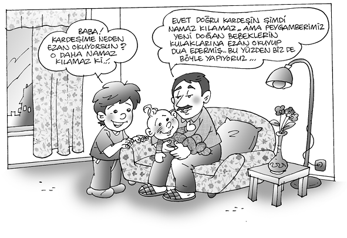
Çocukların zaman zaman, camilere götürülmesi yerinde olur. İlk defa camiye babası ile gitmesi daha uygundur. Baba çocuğa kısa bilgilerle, cami ve namaz adabını anlatmalı, kendisi de çocuğuyla beraber aynı safta namaz kılmalıdır. Birkaç kere bu şekilde camiye götürdükten sonra, çocuğun isteğine bırakmalı, o istedikçe camiye tekrar götürmeli, fakat hiç gitmek istemiyorsa sebeplerini araştırmalıdır. Cemaatten birinin istenmeyen bir davranışı mı olmuştur? Çok sevdiği bir oyundan alınarak mı camiye götürülmüştür? Bütün bunlara benzeyen sebepler araştırılmalı ve ortadan kaldırılmalıdır.
Çocuk camiye götürülürken sevdiği yiyecekler alınmalı, görmek istediği yerler gösterilmelidir. Çocuklar için camilere gitmek aynı zamanda bir zevk hâline getirilmelidir. İmkânı olan baba çocuğunu, pasta salonuna, lokantaya götürerek bir şeyler yedirmeli, en azından sakız ya da şeker almalıdır. Fakat burada da dikkat edilecek önemli bir husus vardır, ibadetin mutlaka maddi bir karşılığı olacaktır gibi bir anlayışı çocuğa vermemelidir. Her camiye gidiş ve gelişi, para ya da hediye ile karşılamak doğru değildir. Camiye gitmekle hediye almayı birleştirmemeli, fakat çocuğu teşvik etmek ve severek camiye gitmesini sağlamak için, namazın dışında seveceği bazı şeyleri de yapmasının ortamı hazırlanmalıdır. Şöyle ki çocuk babasıyla hem sevdiği yerleri gezmeli, sevdiği yiyecekleri almalı, bunları alırken namaz vakitlerine denk getirilerek camiye de götürülüp birlikte namaz kılmalıdır. Yani günlük yaşayışın normal seyri içinde, çocuğun en çok zevk alacağı şeylerle birlikte namaz kılmasını da sağlamalıdır. Bunlar her şehir ve kasabada yerine getirilebilecek türden gezi, eğlence, çocuk oyunu, yiyecek ve giyecek gibi hediyeler olabilir. Camiye giderken ya da gelirken varsa çocuk bahçesi, park gibi yerlere gidilmelidir. Böylece çocuk, ibadetin, namazın manevi zevkine günlük hayatın normal ilişkileri içinde girmeyi öğrenebilsin.
Şurası unutulmamalıdır ki yetişkin Müslümanlar olarak günlük hayatımızın akıp giden işleri, tatlı acı birçok olayın arasında günde beş vakit de namaz kılmakla mükellefiz. Tatlı ve huzurlu olayları yaşarken, şükürle camiye ve namaza koşarak, Allah’ın verdiği nimetlerin artmasını isteriz.54 Nimetler içinde yüzerken şükretmenin derin zevkine ulaşarak, nimetlerden yalnız maddi olmayıp manevi haz almanın yollarını buluruz.
Çocukların zaman zaman camilere götürülmesi yerinde olur. Çocuğun camiye ilk olarak babası ile gitmesi daha uygundur. Baba çocuğa kısa bilgilerle, cami ve namaz adabını anlatmalı, kendisi de çocuğuyla beraber aynı safta namaz kılmalıdır. Birkaç kere bu şekilde camiye götürdükten sonra, çocuğun isteğine bırakmalı, o istedikçe camiye tekrar götürmeli, fakat hiç gitmek istemiyorsa sebeplerini araştırmalıdır. Cemaatten birinin istenmeyen bir davranışı mı olmuştur? Çok sevdiği bir oyundan alınarak mı camiye götürülmüştür? Bütün bunlara benzeyen sebepler araştırılmalı ve ortadan kaldırılmalıdır.
Sıkıntılı durumlarda da camiye ve namaza koşarak, sabretmenin derin anlamını bularak, kendimizi teselli eder ve huzura kavuşuruz.55 Peygamberimiz, Hz. Bilal’e “Ey Bilal! (namaz için kamet getir de böylece) namaz kılmak suretiyle rahatlayalım.”56 diyor. Böylece her durumda beş vakit namazı kılarak ruhen ve bedenen huzura kavuşuruz. Günlük hayatın akıp giden olaylarının içinde, ruhsal ihtiyaçlarımızı da dikkate almış oluruz. Dengeli ve başarılı bir şekilde işlerimize sarılırız.
Yetişkin insanlar, her durumda namaz kılmak suretiyle hem dinin önemli bir emrini yerine getirmiş olmanın, hem de ruh sağlığını korumanın yolunu bulmuş olur. Fakat çocuklara günlük hayatın, tatlı ve sevinçli ortamlarında namaz kılmayı öğreterek işe başlanmalıdır. Çocuğu sevdiği şeylerle ilişkiler kurduğu anlarda camiye alıştırmak daha yerinde olur. Severek, isteyerek, koşarak camiye gitmesinin ortamı hazırlanmalıdır. Arkadaşlarıyla grup hâlinde camilere gitmesi teşvik edilmelidir.
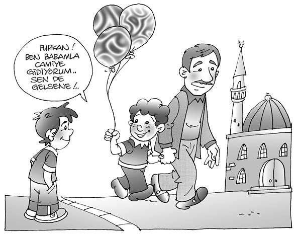
Çocukların cami adabına aykırı gibi görünen davranışları anlayışla karşılanmalı, özellikle din görevlileri ve cemaat tarafından eleştirilmemelidir. Bilmeden yapacağı birtakım davranışlardan, konuşmalardan, gülmelerden dolayı cezalandırılmamalıdır. Tatlı bir üslupla neler yapması gerektiği anlatılmalıdır.
Öncelikle camiye geldiği için takdir edilmeli, teşvik edilmeli; büyük yanlışlar ve hatalar yapıyorsa, bunaltmadan, arkadaşları içinde mahcup etmeden kısaca yanlışları anlatılmalıdır. Mutlaka nasıl doğrusunu yapacağı da gösterilmelidir. Yalnız eleştiri yapıp bırakmamalıdır. Söz gelirni ön saflara geçmesinden rahatsız olunuyorsa hangi saflarda durması gerektiği tatlı bir dille anlatılıp gösterilmelidir.
Namaz Eğitim ve Öğretiminde Din Görevlisinin ve Camilerin Konumu:
Çocukların camiyi ve namazı sevmesinde anne baba başta olmak üzere, din görevlilerinin, cemaatin, yakın arkadaşlarının rolü büyüktür. İmam ve müezzinler tanısın tanımasın çocuklara güler yüz göstermeli, camiye babasıyla ya da yalnız gelmiş çocuklarla şefkat ve sevgi ile ilgilenmelidir. Sınava kalkışmadan dinî bilgilerini artırmalıdır. Onların caminin bahçesinde, şadırvanda oynamasına kızmamalı, yalnız temiz tutmalarını öğretmelidir. Özellikle büyük şehirlerde bir apartmanın küçük dairesi içinde sıkılan, sokaklara da çıkamayan çocuklara camilerin avlusunu, bahçesini bir açık hava din eğitimi yeri olarak kullanabiliriz.
Şunu unutmamalıyız ki, camilere avlusundan, bahçesinden geçilerek girilebilir. Cami avlusundan hangi sebeple olursa olsun kovulan bir çocuk, ilerde camiye çok zor girebilen bir insan hâline gelebilir. Din görevlilerine bu konuda büyük işler düşmektedir. Hem kendi bilgilerini gözden geçirerek, çocuklara karşı en olumlu davranışları bulmalı hem de cemaatini bu yönde eğitmelidir.
Din görevlisine, onun şahsında dine saygı ve bağlılık öncelikle din görevlilerinin bilgi, tutum ve davranışlarına bağlıdır. Saygı ve sevgi başkalarından beklenemez, insan kendi çalışmalarıyla, ilmi ve ahlakî davranışlarıyla onu kazanır. Din görevlileri kılık ve kıyafetleriyle, başta dinî konular olmak üzere her alandaki bilgileriyle, özellikle çocuk gelişimi ve psikolojisi hakkındaki bilgisiyle bunu toplumsal alandaki her türlü davranışıyla, insanlar arası ilişkilerde göstereceği becerileriyle, güler yüz ve nazik davranışlarıyla toplumun her kesimi için aranan bir önder olmalıdır.
Cami avlusundan hangi sebeple olursa olsun kovulan bir çocuk, ilerde camiye çok zor girebilen bir insan hâline gelebilir. Din görevlilerine bu konuda büyük işler düşmektedir. Hem kendi bilgilerini gözden geçirerek çocuklara karşı en olumlu davranışları bulmalı, hem de cemaatini bu yönde eğitmelidir.
Din görevlileri, özellikle çocuklara karşı, güler yüzlü, sempatik, sabırlı ve anlayışlı olmalıdır. Onların oyunlarına müdahale etmeden seyreden, uygun ortamlarda katılan, aile ziyaretlerine gittiklerinde küçük çocuklarla ilgilenen, onlara hediyeler ve çocuk kitapları götüren bir davranış içinde olmalıdır. Okul çağındaki çocuklara dinî kitaplar hediye etmeli, üzerine birkaç güzel cümle yazarak onları okumaya teşvik etmelidir.
Aile içinde, basın ve yayın organlarında din görevlileri olumsuz eleştirilere tâbi tutulmamalı, onların yanlışları ve kusurları çocukların bulunduğu ortamlarda eleştiri konusu yapılmamalıdır.57
Edebiyatçılarımız çocukluk hatıralarında; caminin, cemaatin, aile büyüklerinin, din görevlilerinin, dinî hayatın öğrenilmesi ve yaşanmasında çok kalıcı etkileri olduğunu anlatıyorlar.
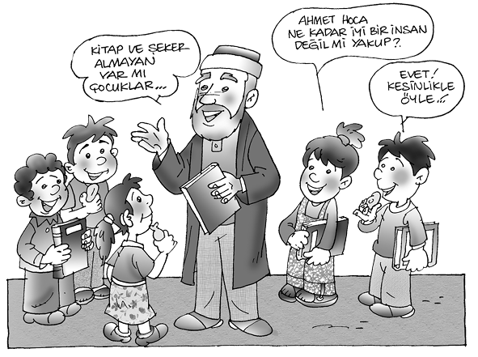
Rıza Nur, camiye devam ettiği günlerini “en mutlu anıları” olarak hatırlıyor. Ömer Seyfettin, annesiyle kıldığı ilk sabah namazında hissettiği derin manevi duyguları “İlk Namaz” adlı yazısında çok güzel bir üslûpla anlatır. Halide Edip Adıvar, Süleymaniye’de kıldığı teravih namazını ve kızların ilk okumaya başladığı olayı dikkatle anlatır. Yahya Kemal’in hatıralarında ve şiirlerinde, H. Fahri Ozansoy’un “Dindar Topluluk ve İftara Doğru” adlı yazısında, Ruşen Eşref Unaydın’ın “Eyüp Sultan’da Ramazan Gecesi” yazısında, Halide Nusret Zorlutuna’nın ilk okumaya başlayışıyla ilgili hatırasında ve Necip Fazıl Kısakürek’in büyük babasından öğrendiği ilk din bilgileriyle ilgili yazısında yine aynı durum göze çarpar58. Çocuk gelişimi üzerinde yapılan araştırmalar gösteriyor ki, çocukluğun ilk yıllarında yapılan eğitim ve öğretimin etkisi ömür boyu devam etmektedir.
b) Orucun Eğitim ve Öğretimi:
İslam’ın önemli şartlarından biri de ramazan ayında bir ay oruç tutmaktır.59 Hastalık, yolculuk gibi durumların dışında oruç, ramazan ayında her yetişkin Müslümana farz kılınmıştır. Pek çok maddi ve manevi sebebi ve faydası bulunan bu ibadete çocuklar da büyük bir hevesle, ilgiyle yönelmektedir. Bedensel bakımdan yeterince gelişmiş çocuklar, mükellef olmadan önce oruca alıştırılmalıdır. Bu sevimli ibadeti yerine getirirken, manasına ulaşmaya çalışmak, insan ruhunda yapacağı derin tesirlere hazırlanmak yerinde olacaktır.
Çocuklar, iftar sofrasının, sahur yemeklerinin manevi zevkinden faydalandırılarak, türlü nimetleri tadarken bunları verene şükretmesi de onlara öğretilmelidir. Bir gün süreyle aç kalma, akşam iftar sofrasına nefis yiyecekleri koyarak ezanın okunmasını bekleme, bu işin takibinin de çocuklara verilmesi, onlara büyük manevi zevk verecektir.
Ramazan ayında pek çok ibadet birlikte yapılır. Bir taraftan beş vakit namaza devam edilirken, gündüzleri oruç tutulur. Geceleri günlük namazlardan ayrı olarak teravih namazı kılınır. Kur’an okunur, komşu ve akrabalara ziyafetler verilir.
Bütün bu dinî ve toplumsal görevlerle yetişmekte olan çocukların manevi âleminde bu gibi olaylar derin izler bırakır. Bu gibi ortamlarda çocuklar dinî telkine daha açık olurlar. Genel anlamda din eğitimi için en uygun ortam bu gibi zamanlardır. Bütün yetişkin aile fertlerinin oruç tuttuğu günlerde, çocuklar da severek bu ibadeti yerine getirmeyi isterler. Yaşları çok küçükse, böyle bir ibadeti yapamayacaksa, bir gün boyunca aç ve susuz kalmaya dayanamayacaksa, oruç tutmalarına izin verilmemelidir. Ancak bu gibi şiddetli isteklerini, namaza, Kur’an okumaya teşvik ederek yönlendirmek daha iyi olur.
Çocuk beden bakımından gelişmişse, sağlık bakımından iyi ise, bazı günler oruç tutması istenebilir. Sahurda en sevdiği yiyecekleri hazırlayarak karnını iyice doyurması, iftar vaktine kadar oruca devam etmesi sağlanmalıdır. Ancak başlanmış bir orucu o günün sonuna kadar götürmesi istenmelidir (Büyük ölçüde sıkıntı çekecek ve açlıktan rahatsız olacaksa bozabilir.). Şurası unutulmamalıdır ki ibadet ciddi bir iştir. Başlanan, niyetlenen bir ibadeti sonuna kadar ulaştırmasını öğretmek lazımdır. Aslında çocuğun mükellef olmadığı bilinerek, dayanamayacaksa hiç başlatılmaması daha uygun olur. Ancak çocuk çok arzu etmiş, anne baba da uygun görmüş ve oruca başlamışsa bozmamalıdır. “Senin iki yarım gün tutacağın oruç bir tam oruç sayılır, o halde yarımşar gün tutarsan olur gibi...” yanlış tavsiye ve telkinlere girmemelidir.
Çocuklar, iftar sofrasının, sahur yemeklerinin manevi zevkinden faydalandırılarak, türlü nimetleri tadarken bunları verene şükretmesi de onlara öğretilmelidir. Bir gün süreyle aç kalma, akşam iftar sofrasına nefis yiyecekleri koyarak ezanın okunmasını bekleme, bu işin takibinin de çocuklara verilmesi, onlara büyük manevi zevk verecektir.
Mükellef olmayan çocuklar iki şekilde oruca yönlendirilebilir. Bazı durumlarda kendileri ister, bu durumda yukarıda belirttiğimiz gibi çok iyi gıdalar alarak tüm gün yorulmadan akşama ulaşması sağlanmalıdır. Başka bir durumda çocuk, 12-13 yaşlarına gelince, beden sağlığı yerinde ise ramazanın birkaç günü oruç tutması istenmeli, bu konuda teşvik edilmeli, yerine getirdiği vakit de maddi ve manevi takdir gösterilmelidir. Birkaç gün oruç tutturduktan sonra, çocuk kendi istiyorsa devam etmeli, istemiyorsa zorlanmamalıdır. Ancak mükellef olduğu çağda sağlığı elverişli ise mutlaka orucunu tutması istenmeli, bunun pek çok maddi ve manevi faydası anlatılmalıdır.
Sahabeden Rübeyyi diyor ki: “Biz aşure orucu tutardık, küçük çocuklarımıza da tutturur (onlarla mescide giderdik), oruçlu çocuklarımıza boyalı yün softan oyuncak yapardık da bunlardan yemek diye ağlayan olursa iftar vakti erişinceye kadar ona bu oyuncağı verir eğlendirirdik”.60 Görülüyor ki sahabe çocuklarına orucu böyle sevdiriyor. Başlanmış bir orucu sonuna kadar götürmesini istiyorlar, bunun için gerekli şartları hazırlıyorlar.
Hac ve zekât, çocukların doğrudan yaparak öğrenecekleri bir ibadet olmaktan çok, aile büyüklerinin yaptıklarını görerek, kendi harçlıklarından ayıracağı paralardan bir kısmını, sadaka ve yardım olarak bir şahsa ya da bir kuruma vermek suretiyle öğrenecekleri bir ibadet şeklidir. Bu esnada, kişilere ilgi ve sevgiyi koruyarak yardım yapmak gerektiği gösterilmelidir. Hacla ilgili olarak ise filmler, resimler, hacdan gelen büyükleri ziyaret, onların oradan çocuklar için getireceği hediyeler kalıcı izler bırakacaktır.
Diğer ibadetlerimizden olan hac ve zekât, çocukların doğrudan yaparak öğrenecekleri bir ibadet olmaktan çok, aile büyüklerinin yaptıklarını görerek, kendi harçlıklarından ayıracağı paralardan bir kısmını, sadaka ve yardım olarak bir şahsa ya da bir kuruma vermek suretiyle öğrenecekleri bir ibadet şeklidir. Bu esnada kişilere ilgi ve sevgiyi koruyarak yardım yapmak gerektiği gösterilmelidir. Hacla ilgili olarak ise filmler, resimler, hacdan gelen büyükleri ziyaret, onların oradan çocuklar için getireceği hediyeler kalıcı izler bırakacaktır.
İbadetlerin birey ve topluma kazandıracağı huzur ve mutluluğu yaşayabilmek için çocukların gelişimi dikkate alınmalıdır. Onların özel yetenek ve eğilimleri göz önünde bulundurulmalı, eğitim öğretimleri adım adım yapılmalıdır. Çocuklarımızın başarılı ve mutlu olmasını istiyorsak, her alanda olduğu gibi, din eğitimi ve öğretimi alanında da, çocukluğun ilk yıllarından itibaren onlara, doğru ve yeterli eğitim vermeliyiz.
ÇOCUKTA SORUMLULUK BİLİNCİNİN ÖNEMİ VE AİLEDE KAZANDIRILMASI
Prof. Dr. Abdurrahman Dodurgalı
ÇOCUKTA SORUMLULUK BİLİNCİNİN ÖNEMİ
Sorumluluk; insanın bireysel bir kişilik kazanması, kendine ve topluma karşı ödevlerini kavrayıp, buna uygun davranışlar geliştirmesidir. Hayat, ne özgürlüğü ne de otoriteyi reddetme alanıdır. Akıllı ve düşünebilen bir varlık oluşumuz, nasıl bize özgür davranma imkânı sağlarsa, sosyal bir varlık olmamız da özgürlüklerimizin kısıtlanmasının kabulü anlamına gelmektedir. Uçurtmanın uçabilmesi, nasıl bir yere bağlı olmasıyla mümkünse, kişinin özgürlüklerini kullanabilmesi de kısıtlamaları kabullenmesiyle mümkün olabilmektedir.
Sorumluluk bilincinin geliştirilmesi, eğitimin en önemli problemlerindendir. Çocuğun sorumluluk bilincine ulaşabilmesi, özgürlüklerini kullanması ile otoriteyi (disiplin) kabulü arasında denge kurabilmesine bağlıdır. Birbiriyle çelişen özgürlük ve otoriteyi kabul, aynı anda aynı kişide birbirini dengeleyerek kullanılabildiğinde, sorumluluk bilincini ortaya çıkarır.
Sorumluluk alabilmeye ilişkin becerileri kazanmak için küçük yaştan itibaren bir hazırlık dönemine ihtiyaç vardır. Bu hazırlık dönemi, gelişim alanlarının tümünü kapsar. Eğitimin bütüncül yapısı da böyle bir anlayışı gerekli kılmaktadır.
Sorumluluk bilincinin geliştirilmesi, eğitimin en önemli problemlerindendir. Çocuğun sorumluluk bilincine ulaşabilmesi, özgürlüklerini kullanması ile otoriteyi (disiplin) kabulü arasında denge kurabilmesine bağlıdır. Birbiriyle çelişen özgürlük ve otoriteyi kabul, aynı anda aynı kişide birbirini dengeleyerek kullanılabildiğinde, sorumluluk bilincini ortaya çıkarır.
Sorumluluk bilincine hazırlık, öncelikle duygusal gelişim alanındaki faaliyetlerin ihmal edilmemesine bağlıdır. Kendine güven, ancak küçük yaşta (2,5) temel güven duygusunu kazanmak ve güvensizlik duygusunu önlemekle geliştirilebilir. Bunun için, küçük yaştan itibaren çocuğun duygusal gelişiminin temel öğesi olan sevgi ön planda tutulmalıdır. Sevgi, çocuğu tanımayı ve anlamayı, onunla ilgilenmeyi, ona iyi bir çevre oluşturmayı ve kişiliğine saygı duymayı gerektirir.
Sorumluluk bilinci bir yönüyle motor gelişim alanını ilgilendirmektedir. Çünkü kişilik gelişiminin sağlanabilmesi, aşağılık duygusuna karşı iş yapıcılığın, çekingenlik ve kuşkuya karşı özerkliğin, suçluluk duygusuna karşı girişimciliğin öne çıkarılmasını gerektirir. Bunlar, motor gelişim alanı ile ilgili faaliyetlerdir. Motor gelişim ise, oyun, ev işleri ve çocuğun kendi işlerini kendisinin yapması gibi faaliyet alanlarında sağlanır.
Sorumluluk bilincinin gelişimi diğer bir yönüyle zihinsel gelişim alanıyla ilgilidir. Öğrenme güdüsü ve becerisi, sağlıklı bir zihinsel gelişimi gerektirir. Bu sebeple zihinsel öğrenme döneminden itibaren soru sorma, hayal kurma, akıl yürütme ve kavram geliştirme faaliyetleri teşvik edilmeli, yaratıcılığı desteklenmelidir. Bilinçli öğrenme döneminde ortaya çıkacak olan kuşku duyma, ergenlik döneminde ortaya çıkacak sorgulama ve eleştirmelerin sağlıklı olabilmesi, böyle bir alt yapıyı gerektirir. Bu dönem aynı zamanda benüstü varlık ve fizik ötesi dünya ile ilişkilerin doğrudan kurulduğu bir dönemdir. Ergende bunlara bağlı olarak değer yargıları oluşur. Sorumluluk bilinci, kendine güven kazanmakla doğrudan ilişkilidir. Bu güvenin kazanılmadığı durumlarda sorumluluğun gereklerini yerine getirebilmek çok zordur. Kendine güven, ancak gelişim ödevlerini yerine getirmekle mümkündür (Havighurst).
Sorumluluk bilincinin gelişimi bir yönüyle zihinsel gelişim alanıyla ilgilidir. Öğrenme güdüsü ve becerisi, sağlıklı bir zihinsel gelişimi gerektirir. Bu sebeple zihinsel öğrenme döneminden itibaren soru sorma, hayal kurma, akıl yürütme ve kavram geliştirme faaliyetleri teşvik edilmeli, yaratıcılığı desteklenmelidir.
Sorumluluk bilinci, genellikle ergenlik dönemi gelişim ödevlerini gerçekleştirerek tamamlanır. Bu ödevler şöyle sıralanabilir:
Değişen toplumsal gruplara girme, bu gruplardaki rolleri ve kendi rolünü öğrenme,
Kendi cinsinin psiko-sosyal ve biyolojik rolünü öğrenerek bunlara uygun davranışlar geliştirme,
Başkalarına ve topluma olan ödevlerini kavrayacak şekilde bir vicdan, ahlak anlayışı ve değerler sistemi geliştirme,

Özellikle lise çağında, büyüme süreci boyunca, uygun bir bağımsızlık-bağımlılık tarzı geliştirme ve yürütme (Bu ödevi, bireyin benlik-durum ilişkilerini uyum sağlayıcı bir düzeyde geliştirmesinin gereği olarak ele almak mümkündür. Gerçekte bireyin tam anlamı ile “bağımsız” olmadığını, “bağımlılığın” canlı varlığın kaçınılmaz bir durumu olduğunu öğrenmesini de bu görev içinde ele almak gerekmektedir.),
Evlenme, aile kurma konuları için hazırlanma.
Ergenlik dönemi gelişim ödevleri; kimlik edinme, sosyalleşme ve üretken olmayı gerçekleştirmekle tamamlanır. Bunlardan kimlik edinme, rol kargaşasını önler. Böylece birey toplum içinde kendisinden beklenilen rolleri üstlenebilir. Sosyalleşme, yalnızlık fobisinin karşıtıdır. Paylaşma ve birlikte çalışmayı sağlar. Grup içinde rol üstlenebilmeyi temin eder. Üretkenliğin motivasyonu başarıdır. Üretkenlik de gelişmeyi temin eder, duraklamayı önler.
Başarı, kendini yetiştirmeyi gerektirir. Kendini yetiştirmek yaşadığı çevreye ve zamana göre değişkenlik gösterir. Günümüzün kendini yetiştirme ölçütleri dil bilme, bilgisayar kullanabilme, bilgiye ulaşabilme, pratik olma vb. gibi konulardır.
Bütün bunların bu dönemde gerçekleştirilebilmesi, bireyin çevresindeki çeşitli ortamlarla ilişki kurması, öğrenmesi ve deneyim kazanmasına bağlıdır. Sorumluluk bilinci çok zor elde edilir. Bir kimsenin sorumlu tutulabilmesinin temel şartı, ehliyetli olmasıdır. Yani sorumluluk yüklenebilecek donanıma sahip olması gerekmektedir. Bu da anlamak, bilmek gibi eylemleri gerçekleştirecek bir düzeyde akıl ve idrake, bilgi sonucu iyiyi kötüden ayıracak bir temyiz gücüne ve bunların üstünde bir iradeye ihtiyaç duyar. Bunlar ehil olmanın ön şartlarındandır. Bütün bunlardan sonra kişide yapabilme gücünün olması gerekmektedir.
Sorumluluk bilincinden beklenilenlerin elde edilebilmesi, iradenin ortaya çıkmasına bağlıdır. İradeyi oluşturan faktörler eğitim, değer yargıları, istek ve arzular, zekâ ve kabiliyetlerdir.
İrade, zihinsel olarak kendisini özgür hisseden kişiyi, iyi davranışlar yapmaya yönelten güçtür. Bilgi, irade ve güç (kudret) birlikte özgür davranışı oluşturur. İradeye ilişkin davranışlar dört aşamada ortaya çıkar:
Hedef
Muhakeme
Karar
Davranış
İrade, istek ve davranışlarımızda aklı öne çıkarır, bedensel arzu ve ilgilerimizi aklın denetiminde gerçekleştirmemizi sağlar.
Eğitim faaliyetlerinin amaçlarından birini oluşturan sorumluluk bilinci kazanımı, öncelikle anne-baba-çocuk ilişkileri içinde gerçekleştirilir. Çünkü temel güven duygusunun kazanılacağı en uygun ve yoğun duygusal ortam ailede bulunur. Bu konu, ailenin diğer eğitim kurumlarına karşı önemli bir üstünlüğüdür.
Aile içinde engellenen çocuk, zihinsel gelişimini gerçekleştiremeyeceği için, sorumluluk bilincini de oluşturamayacaktır.
Ayrıca çocuğun eğitimi ile ilgili sorumluluk da birinci dereceden ailenin omuzlarındadır. Zaten eğitimin en etkili olduğu dönemler de fiziki bağımlılıktan dolayı aile içinde geçmektedir. Zihinsel gelişimin sağlanması önemli ölçüde çocuğun özgür bırakılmasına, yaratıcılığın ortaya çıkarılmasına, sorduğu soruların bilinçli bir şekilde cevaplandırılmasına bağlıdır. Çocuk bütün bunlara aile içi yatay ve esnek ilişkilerle alıştırılır. Aile içinde engellenen çocuk, zihinsel gelişimini gerçekleştiremeyeceği için, sorumluluk bilincini de oluşturamayacaktır.
Motor gelişim ise küçük yaştan itibaren çocuğun iş yapma ve iş başarabilme yetisinin ortaya çıkarılmasına bağlıdır. Bunda da en önemli görev, aileye düşmektedir. Çocuğun iş yapmasını anne baba teşvik etmeli, yapabileceği işlerde sorumluluk alması sağlanmalıdır. İş yapma esnasında yaptığı hatalar ve yanlışlıklar düzeltilerek giderilmeli, hiçbir zaman onun kişilik gelişiminde engellemelere sebep olacak tepkiler ortaya konulmamalıdır. Çünkü sorumluluk bilincine sahip olmak, kişilik gelişimini tamamlamak ile mümkün olmaktadır. Kişinin davranış özellikleri, onu diğer insanlardan ayıran düşünüş ve davranışları diye tanımlayabileceğimiz kişilik, zekâ, mizaç, duygu, sosyal durum ve beden yapısı gibi unsurlardan meydana gelir.
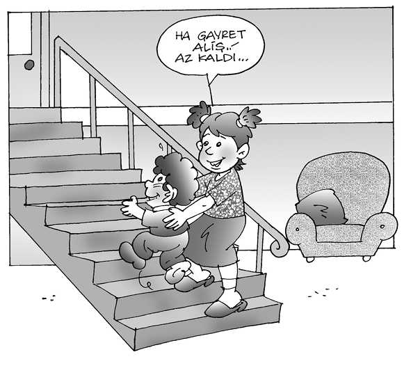
Sağlıklı ve etkin bir kişilik yapısının nitelikleri şöyle sıralanabilir:
a. Duygusal güven
b. Kendini tanıma
c. Başkalarını kabul etme
ç. Sosyalleşme
d. Öğrenme güdüsü ve becerisi
e. Bağımsızlık
f. Özgürlük ve disiplin arası denge
g. Paylaşma, birlikte çalışma
Bireyin kişilik yapısı, kalıtımsal özellik ve sınırlamaları içinde, fiziksel, zihinsel, duygusal ve sosyal gelişimlerinin çevreyle ve birbirleriyle karşılıklı etkileşimi sonucu oluşmaktadır.61
Kişilikle ilgili bilgiler, her türlü eğitim faaliyetlerinde, insanlar arası ilişkilerde, ailede ve çocuk terbiyesinde muhakkak bilinmesi gereken bilgilerdir.62 Hatta eğitimci, bu konuda sadece bilgi ile yetinen dış gözlemci olarak kalamaz. Zaman zaman da “katılan gözlemci” olarak olaya girmek gibi bir mecburiyetin içindedir.63
Kişiliğin dengeli gelişmesi için kişilik gelişiminin bütün evrelerinde uygun eğitim tedbirlerine ihtiyaç vardır. Erikson’a göre kişilik gelişiminin evrelere göre özellikleri şöyledir:
Çocukluk döneminde:
Güvensizliğe karşı temel güven
Utanç ve kuşkuya karşı özerklik
Suçluluk duygusuna karşı girişimcilik
Aşağılık duygusuna karşı iş yapıcılık
Ergenlik ve erişkinlik döneminde:
Rol kargaşasına karşı kimlik edinme
Yalnızlık duygusuna karşı yakınlık kurma
Duraklamaya karşı üretkenlik
Olgunluk döneminde:
Umutsuzluğa karşı benlik bütünlüğü
Yine Erikson’a göre, her dönem bir sonraki dönem için basamak oluşturur. Bir sonraki dönem kendinden önceki dönemlere dayanır. Önceki dönem, sonraki dönemlerde gelişecek olan çekirdek özellikleri içine alır.64
Gelecekteki hayatında hem dinî, hem dünyevî çok büyük sorumluluklar altına girecek bir mümin adayı olan çocuğun, sorumluluk konusunda da eğitilmeye ihtiyacı vardır. Ergenlik çağından itibaren Allah’a ve diğer insanlara karşı birçok sorumluluk yüklenecek kişide, bu bilincin aniden ortaya çıkmayacağı bir gerçektir. Onun için, bu konunun çocukluk döneminde üzerinde durulması, ergenlik çağına kadar geliştirilmesi gerekir.
Ergenlik çağında çocuğun beden yapısı ve şahsiyeti tam olarak ortaya çıktığından, bundan sonra sorumluluklarını yerine getirebilecektir. Yerine getirmediklerinin ise hesabını verecektir.
Gelecekteki hayatında hem dinî, hem dünyevî çok büyük sorumluluklar altına girecek bir mümin adayı olan çocuğun, bu konuda da eğitilmeye ihtiyacı vardır. Ergenlik çağından itibaren Allah’a ve diğer insanlara karşı birçok sorumluluk yüklenecek kişide, bu bilincin aniden ortaya çıkmayacağı bir gerçektir. Onun için, bu bilincin çocukluk döneminde üzerinde durulması, ergenlik çağına kadar geliştirilmesi gerekir.
Sorumluluk bilincinin din eğitiminde özel bir yeri vardır. Dinî yükümlülüklerimiz (mükellefiyet), başlıca dinsel faaliyetlerimizi meydana getirir. Bundan dolayı sorumluluk bilincinin dinî kültürde çok önemli bir yeri vardır. Azhab (38/72), Kıyame (75/36), Bakara (2/286), Beled (90/8-10) ayetleri sorumlulukla ilişkilidir. Sorumluluğun bireysel olduğunu vurgulayan ayetler (En’am 6/64) olduğu gibi, kötülüğe karşı ilgisiz ve kayıtsız kalmamızın pasif suç ortaklığı olduğunu vurgulayan ayetler de vardır (Ankebut 29/13).
Ayetler, bu konuya çocuk açısından değil, genel anlamda insandaki sorumluluk bilinci açısından yaklaşmıştır. Çeşitli ayetlerle insanın sorumluluğuna verilen konular ifade edilmiş, böylece yapılan hareketlerin birtakım sonuçlar doğuracağı, dolayısıyla insanın davranışlarına dikkat etmesinin ve sorumluluk bilinci ile hareket etmesinin gereğine dikkat çekilmiştir. Bazı görevlerin yüklenmesi suretiyle, insana bireysel kişilik bilinci kazandırılması amaçlanmıştır. Böylelikle kişi, herhangi bir birey olmaktan çıkarılıp “sorumluluk yüklenen bir kişi” durumuna getirilmek istenmiştir.65
Din eğitiminin insana kazandırmayı hedeflediği iman ve aksiyon, ona aynı zamanda bir sorumluluk da yükler. Bu sorumluluk, insanın ve toplumun düzelmesinde görev almaktır. Dolayısıyla bireyin, kendi haklarının, görevlerinin ve sorumluluklarının tamamen farkında olduğu, duyarlı bir kişilik sahibi olması gerekir.66
Şimdi konu ile ilgili ayetlere geçelim:
Sorumluluk duygusunun mahiyeti ve insanla ilişkisi şöyle anlatılır:
“Doğrusu Biz sorumluluğu göklere, yere ve dağlara sunmuşuzdur da onlar bunu yüklenmekten çekinmişler ve ondan korkup titremişlerdir. Pek zalim ve pek cahil olan insan ise, onu yüklenmiştir.”67
Ayette sorumluluk yüklenme konusunun, çeşitli varlıklara teklif edildiği, fakat özgür hareket edebilme avantajı yanında hesap verme gibi dezavantajı da kapsayan bu özelliği, gökler, dağlar, yeryüzü gibi muazzam varlıkların yüklenmekten çekindiği anlatılmaktadır. İnsan ise, bu ağır yükü, cahilliği ve zalimliği sebebiyle korkmadan üzerine almıştır. Böylece hakikaten zor ve ağır bir yükümlülüğün altına girmiştir. İradesi ile tercihler yapabilme özelliğinin yanında, hareketlerinin hesabını verme sorumluluğunu da yüklenmiştir.
Bu durum Kur’an’da şu ayetlerle bildirilir:
“Biz onun için iki göz, bir dil ve iki dudak var etmedik mi? Biz ona eğri ve doğru iki yolu da göstermedik mi?”68
Ayet, insanın hareketlerinin mahiyeti hakkında bilgi sahibi olabileceği duyu organlarının olduğunu ve bu organlarla yapacağı değerlendirmelerden sonra hayra da şerre de gidebilecek bir davranış özgürlüğünü sağlayacak iradenin kendisine verildiğini beyan etmektedir.69
Ayrıca başka bir ayette de;
“Sonra da ona iyilik ve kötülük kabiliyetini verene andolsun ki...”70 buyurulmakta, böylece insana iyilik ve kötülük yapma kabiliyetlerinin verildiği ifade edilmektedir.71
Konu ile ilgili şu ayeti de zikredebiliriz.
“Biz insanı, katışık bir nutfeden yaratmışızdır. İmtihan edelim diye kendisini işitir ve görür kıldık. Şüphesiz biz ona doğru yolu gösterdik. İster şükredici olsun, ister nankör.”72
İnsanı yoğun baskı ve gerilimlere sürükleyen sorumluluk duygusu, üzerinde önemle durulması gereken bir konudur. Ona sorumluluk yüklerken gücünün üstünde bazı davranışları ondan istememeye özen gösterilmeli, hatalı ve yanlış hareketlerini fazla büyütmemeli, yapabileceği davranışları göstermediği zaman da ona af ve merhametle muamele edilmelidir.
Yani insana, imtihan olacağı olaylar üzerinde düşünüp değerlendirebilmesi için beş duyuyu73 ihsan ettik. Gidilmesi gereken yolu da gösterdik. Sonra ona, hem şükredicilik hem de inkârcılık kabiliyeti verdik, ister şükretsin (doğru yola gitsin), ister inkâr etsin (yanlış yolda gitsin) denmektedir.
Bütün bu ayetlerden çıkan sonuç şudur ki, insan, olayları değerlendirebilecek kabiliyetlere, karar verip iyi ve kötü hareketlere yönelebilecek bir iradeye sahip olan, bunlara mukabil hareketlerinin sorumluluğunu kabul etmiş bir varlıktır. Sorumsuzca davranışlar, iyi kötü ayırt etmez hareketler, onun ahsen-i takvim yaratılışına uygun değildir.
“İnsanoğlu kendisinin başıboş bırakılacağını mı sanır?”74.
Akıl sahibi olduğundan, insan, başıboş bırakılmamış, sorumluluk sahibi bir varlık olarak yaratılmıştır. Aklın gereği sorumluluktur. Bu durumun aksi, akla aykırıdır.
Sorumluluğun çok ağır bir yük olduğunu fark eden insanoğlu, her fırsattan yararlanarak bundan kaçmaya çalışır.
“Allah kişiye ancak gücünün yeteceği kadar yükler. Kazandığı iyilik lehine, ettiği kötülük de aleyhinedir. Rabbimiz, eğer unutacak veya yanılacak olursak bizi sorumlu tutma. Rabbimiz, bizden öncekilere yüklediğin gibi bize de ağır yük yükleme. Rabbimiz bize gücümüzün yetmeyeceği şeyi taşıtma, bizi affet, bizi bağışla, bize acı.”75
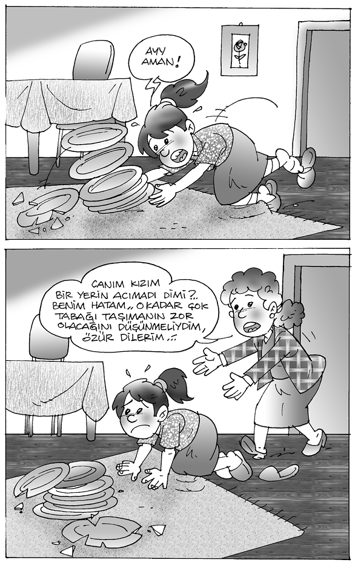
Bu ayetlerde, sorumluluk bilincinin insanı sürüklediği psikoloji çok canlı bir şekilde ortaya konmaktadır. Herkese ancak taşıyacağı kadar bir sorumluluk verilmiş olmasına rağmen, insan yine de sırtındaki bu ağır yükü hafifletmek istemektedir. Bu psikolojisini şu istekleri ile gösterir:
Samimiyetle davranma, fakat yanılma veya hata yapma sonucu, yerine getirmediği hareketlerden sorumlu tutulmaması arzusundadır.
Gücünün üstünde bir sorumluluk altına sokulmamayı talep etmektedir. Gücü, üstüne aldığı sorumluluğa yetse bile yükünün yine de hafiflemesini ister.
Bütün bu dilekleri kabul edilse bile yine de sorumluluklarını yerine getiremeyeceğini bildiği için, bu konuda af ve merhamet talep eder.
İnsanı bu derece yoğun baskı ve gerilimlere sürükleyen sorumluluk duygusu, üzerinde önemle durulması gereken bir konudur. Ona sorumluluk yüklerken gücünün üstünde bazı davranışları ondan istememeye özen gösterilmeli, hatalı ve yanlış hareketlerini fazla büyütmemeli, yapabileceği davranışları göstermediği zaman da ona af ve merhametle muamele edilmelidir. Sorumluluk konusunda insanın değerlendirilmesi böyle olunca çocuk da en azından bu özellikler içinde ele alınmalıdır. Çünkü bu konuda çocuğun da beklentileri aynıdır.
KARAKTER EĞİTİMİ: ANNE-BABALAR İÇİN STRATEJİLER
Prof. Dr. Halil EKŞİ
KARAKTER EĞİTİMİ
Giriş
Bilindiği gibi, bir çocuk dünyaya getirmek; pek çok sorumluluğu da beraberinde getirir. Özellikle “değişim”in ivme kazandığı, küreselleşme anaforunun, ailenin çocuk yetiştirme konusundaki endişelerini artırdığı bugünlerde... Teknolojik gelişmenin, tarihin hiçbir döneminde olmadığı kadar hızlı olduğu ve kültürler arası etkileşimin had safhaya çıktığı bir ortamda yaşıyoruz. Çocuklarımıza sunulan imkânlar, tahminlerimizin çok ötesinde. Tabi bu imkânların beraberinde getirdiği “yan etkiler” de...
İçinde yaşadığımız kürenin durumunu, birtakım suç istatistikleri, şiddet yaygınlığı ve benzerleri ile birlikte düşündüğümüzde, daha da karamsar olmaktayız. Medyada sıklıkla rastladığımız; iyi okullarda okuyan gençlerin birtakım “sapkın” inanç sistemlerine bağlanarak “intihar” etmeleri durumu, artık kanıksanmaya başlandı. Kötü örnekler çoğaltılabilir, ama biz burada yazıklanma ya da yakınma yerine daha ziyade “Ne yapmalı?” sorusuna; başka bir ifadeyle, “Bu kaçınılmaz gibi görünen meydan okumalara ve iç karartıcı manzaraya karşı aileler neler yapabilirler?”e cevap arayacağız.
Ailelerin çocuklarında olmasını istedikleri özellikleri genel olarak iki başlık altında toplamak mümkündür: Başarılı olmaları ve iyi insan olmaları. Başarılı olmaları, onların okul performanslarının iyi olması, akranları arasından sıyrılmaları, iyi bir iş sahibi olmaları gibi hususları içerir. Hayatta başarılı olmak, ailelerin üzerinde hassasiyet gösterdikleri birincil husustur. Bu, zaman zaman iyi insan beklentisinin üzerini örtebilmektedir. Özellikle de çocuklarımızın okul değiştirmeleri gereken sınav zamanlarında artık neyin amaç, neyin araç olduğu iyice birbirine karıştırılmaktadır. Oysa öncelikli olan, çocuklarımızın iyi insanlar olarak yetişmeleridir.
Hayatta başarılı olmak, ailelerin üzerinde hassasiyet gösterdikleri birincil husustur. Bu, zaman zaman iyi insan beklentisinin üzerini örtebilmektedir. Özellikle de çocuklarımızın okul değiştirmeleri gereken sınav zamanlarında artık neyin amaç, neyin araç olduğu iyice birbirine karıştırılmaktadır. Oysa öncelikli olan, çocuklarımızın iyi insanlar olarak yetişmeleridir.
İyi insan; sorumluluk sahibi, saygılı, iyiliksever, içten, diğerkâm (özgecil), doğru sözlü olmak gibi temel insani değerleri benimsemiş, onlarla hareket eden bireyler olması beklentisini ifade eder. Bu çalışmada “Karakter Eğitimi” olarak isimlendirilen ve ailelere, çocuklarının iyi insan olması beklentilerini gerçekleştirme konusunda yardımcı olacağını düşündüğümüz birtakım stratejiler, öneriler ve bir uygulama örneğinden bahsedeceğiz.
Öncelikle karakter eğitimi kavramı üzerinde duralım. Karakter eğitimi, çocuklarımızın temel ahlaki ve insani değerleri anlama, onlara karşı hassas olma ve onlarla birlikte yaşamalarına yardımcı olmak amacıyla gerçekleştirilen “kasıtlı” birtakım etkinlikler repertuarıdır. Tanımda geçen “kasıtlı” kelimesinin dikkat çektiğini tahmin ediyoruz. Kasıtlı, çünkü sadece doğru düşünme ve problem çözme gibi sürece yönelik yaşantılarla çocuklarda “kendiliğinden” iyi karakterin oluşacağı düşünülemez. “Karakter eğitimi” yaklaşımı, insan doğasında var olan birtakım “iyi niteliklerin” ortaya çıkması, gelişmesi ve doğruya yönelmesi için “müdahale” edilmesi gerektiğine inanmaktadır. Çocuklara sadece ve sadece kendi ayakları üzerinde durmalarını öğretmek, yukarıda detaylarına girmediğimiz istatistiklerin ortaya koyduğu sonuçları doğurmaktadır. Çocukların kendi ayakları üzerinde durması elbette gereklidir. Ancak bu yeterli değildir…
Karakter eğitimi, başta aile olmak üzere okulun ve toplumun ortak sorumluluğundadır. Aile, ilk ve öncelikli karakter şekillendiricidir. Ağırlık okul öncesi dönemde olmak üzere, yükün çoğu ebeveynin sırtındadır.
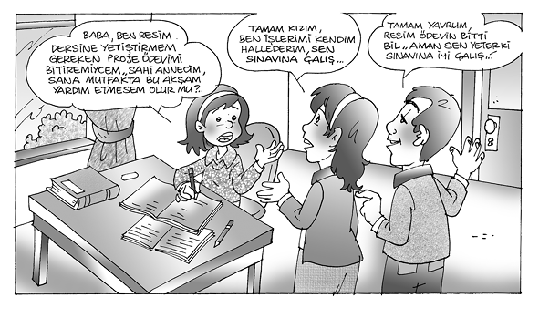
Karakter eğitimi, başta aile olmak üzere okulun ve toplumun ortak sorumluluğundadır. Aile, ilk ve öncelikli karakter şekillendiricidir. Ağırlık okul öncesi dönemde olmak üzere, yükün çoğu ebeveynin sırtındadır. Çocuklarımızın iyi birer insan olarak yetiştirilmelerinde, ailelerin desteklenmesi gerektiğini düşünüyoruz. Toplum olarak aile yapımızın sağlamlığı ile övünürüz. Bununla birlikte, “yeni” dünyanın şartlarına ve “süper” tehditlerine karşı strateji ve uygulamaya yönelik etkinliklerle ailenin desteklenmesi kaçınılmaz görünmektedir.
1. Stratejiler
Bilindiği gibi karakter eğitimiyle ilgili öncelikli konu, temel prensiplerin ortaya konulmasıdır. Çocukların ilk ve öncelikli karakter “şekillendiricileri” olan ailelerin, bu işlevlerini yerine getirirken uymaları gereken ana ilkelerin ne olduğunu bilmeleri oldukça önemlidir. Aşağıda K. Ryan ve K. E. Bohlin’in kaleme aldıkları karakter eğitiminin olmazsa olmaz on kuralını bulacaksınız.
a) Birinci Kural: Önceliği Ebeveynliğe Vereceksiniz
İyi ve karakterli çocuklar yetiştirmek, buna zaman ayırmayı ve itinayı gerektirir. Eğitimciler, nitelikli öğrenmede iki konuyu önemli bulmaktadır: Zamanında gerçekleştirilmesi gereken görevler ve öğrencilerin öğrenmeye ilgi duymalarının sağlanması.
“İyi örnek” olunması ve bu iyi örnekliğin hiç aksatılmadan sürekli olması beklenir; insanların çoğu bu beklentiden hoşlanmaz. Bununla birlikte bu durum anne babalar için kaçınılmazdır. Çocuk, ahlaki değerleri de bu yolla öğrenir.
b) İkinci Kural: İyi Örnek Olacaksınız
“İyi örnek” olunması ve bu iyi örnekliğin hiç aksatılmadan sürekli olması beklenir; insanların çoğu bu beklentiden hoşlanmaz. Bununla birlikte bu durum anne babalar için kaçınılmazdır. Çocuk, ahlaki değerleri de bu yolla öğrenir.
c) Üçüncü Kural: Bu Mesuliyeti Tek Başına Üstlenmeyeceksiniz
Çocuklarımızın çevresindeki bütün -iyi veya kötü- insanlar, potansiyel modellerdir. Bu kişilerin, çocuklarımıza ne tür etkiler yaptıkları konusunda bilinçli olmalı ve kötülüklerden emin, iyinin sunulduğu ortamlar oluşturmalıyız.
d) Dördüncü Kural: Çocuğun Okul Yaşamıyla Son Derece İlgili Olacaksınız
Anne babalar çocukların birincil karakter eğitimcileri olmakla birlikte, öğretmenlerin ve okulların da bu konuda önemli rollerinin olduğu unutulmamalıdır.
e) Beşinci Kural: Çocuğunun Kalbine ve Aklına Ne Girdiğine Son Derece Dikkat Edeceksiniz
İyi karakterli olmanın bir anlamı da “neyin doğru neyin yanlış, kimin iyi insan kimin zayıf insan olduğuna dair bir anlayış geliştirebilme”dir.
f) Altıncı Kural: Temel Kuralları İhmal Etmeyeceksiniz
Çocukların doğuştan getirdikleri özelliklerin iyiye yönlendirilmesi ve ahlaki değerlerin oluşturulması zaman ister. Öncelik, dürüstlük, başkalarına saygı ve sorumluluk gibi temel değerlere verilmelidir. Büyüdükçe sabır, adalet ve ölçülü olmak üzerinde yoğunlaşılmalıdır.
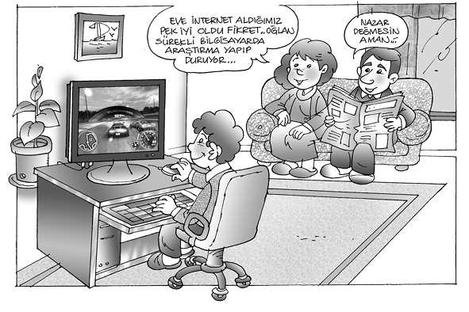
g) Yedinci Kural: Seven Bir Kalple Ceza Vereceksiniz
Çocukların sınırlara ihtiyacı vardır. Ama maalesef, çoğunlukla bu sınırlar aşılacaktır. Makul bir ceza, karakter eğitiminin bir boyutudur. Çocuklar neden cezalandırıldıklarını bilmeli ve bunun anne baba sevgisinden kaynaklandığını hissetmelidirler.
h) Sekizinci Kural: Ahlaki Bir Dil Kullanacaksınız
Olaylar basitçe “uygun” ve “uygun olmayan” diye sınıflandırılamaz. Başkalarına zarar veren davranışlar “yanlış” ve “doğru” olarak nitelendirilmelidir.
ı) Dokuzuncu Kural: Karakter Eğitimini Asla Tek Başına Kelimelere Yüklemeyeceksiniz
Çocuklar, iyi karakterin kelimelerden daha fazla bir şey olduğunu erkenden öğrenirler. Bu yüzden ebeveynler çocuklarına, karakter eğitiminde temelin davranışlar -kendi davranışları- olduğunu öğretmelidir.
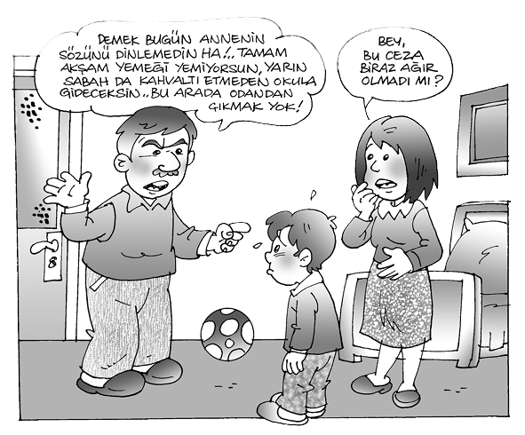
j) Onuncu Kural: İyi Karakteri Evinizin Asli Önceliği Hâline Getireceksiniz
Anne babalar ve çocuklar, sürekli bazı şeyleri yetiştirmek noktasında baskı altındadır. Bunlar mazeret olmamalı; çocuklar, büyüklerin temel dikkatinin, kendilerinin iyi bir karaktere sahip olmaları üzerinde yoğunlaştığını bilmelidirler.
Öneriler
Daha önce de üzerinde durduğumuz gibi, çocuklara iyi karakterlerin kazandırılması, evin ve okulun gayretlerinin çevre tarafından desteklenmesiyle mümkündür. Yaşadığımız çağ, “medya ve akran gruplarının gençler üzerinde etkisinin oldukça yüksek olduğu ve dolayısıyla ailelerin, çocuklarının ahlak gelişiminde güçlü bir rol almalarını” gerektiren bir çağdır. İşte size bu çabalarınızı destekleyecek bir demet öneri:
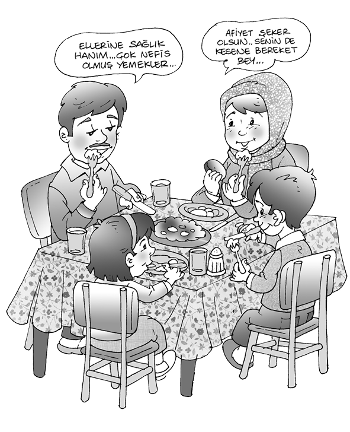
Evde iyi davranışlara modellik yapın. Komşusunun haklarına saygı gösteren, başkalarının arkalarından konuşmayan ebeveynler, adalet veya sorumluluğa dair çocuklarıyla konuştuklarında elbette daha etkili olacaklardır. Kendinize ve ailenize yüksek ahlaki standartları hedef edinin.
Çocuklarınızla değerleriniz ve fikirleriniz hakkında açık bir biçimde konuşun. Hangi konulara önem verdiğinizi çocuklarınız bilmelidirler. Çocuklarınızın, sizin prensiplerinizin veya düşüncelerinizin gerekçelerini anladıklarından emin olmalısınız.
Çocuklara iyi karakterlerin kazandırılması, evin ve okulun gayretlerinin çevre tarafından desteklenmesiyle mümkündür.
Eşinize, çocuklarınıza ve diğer aile fertlerine karşı saygılı olun. Unutmayın, çocuklarınızın başkalarına karşı duyarlılık ve empati kazanabilmeleri, diğerlerine saygıyla davranmalarına bağlıdır ve bu konuda model sizsiniz.
Ailenin her ferdine karşı davranış tarzınızda nezaketi elden bırakmayın. Bu durum çocukların böyle davranışları model almalarına ve dolayısıyla öğrenmelerine yol açacaktır.
Hem ev içi hem de ev dışı sorunlarını sağlıklı yollarla nasıl çözebileceklerini, kendi hayatınızda uygulayarak gösterin.
Mümkün olan sıklıkla ailenizle yemek yiyin (televizyonsuz bir ortamda). Yemek hızlı bir atıştırma bile olsa, bu zamanı, çocuklarınızın sorunlarını dinlemek için bir fırsat olarak kullanın.
Aile etkinlikleri planlayın. Çocuklarınızı bu planlarınıza dahil etmeyi unutmayın. Kendi önerilerine değer verildiğini fark etsinler.
Çocuklarınızın yanında asla kötü alışkanlıklarınızı sergilemeyin (umarız yoktur). Bu alışkanlıklara karşı çocuklarınıza, gerekli donanımları sağlayın.
Çocuklarınıza ahlaki ve manevi değerlerinizi (hangilerine sahipseniz) aşılamayı ihmal etmeyin. Araştırmalar ahlaken güçlü bireylerin suça daha az yönelik eylemler ortaya koyduklarını göstermektedir.
Ailenizle birlikte çeşitli sosyal hizmetlere katılın. Çocuklarınızla birlikte yardım kuruluşlarını, bakıma muhtaç kişilerin kaldığı kurumları ziyaret edin. Çevrenizde yardıma muhtaç kimseler varsa onlarla ilgili yapılacak çalışmalara çocuklarınızı da dahil edin. Çocuklarınızla birlikte evde okuma zamanı oluşturun. Özellikle edebî eserler, karakter gelişimi için harika birer kaynaktır. Kitaplardaki karakterlerin sergiledikleri davranışlar üzerine konuşun.

Çocuklarınızın para harcamaları konusunda plan yapmalarına yardımcı olun. Kendi bütçelerini yapsınlar. Siz de maddi olmayan ödüllendirme yöntemini kullanmaya özen gösterin.
Çocuklarınızla sizin hayatınız ya da geçmiş büyüklerinizin hayatları hakkında konuşun. Böylece kendi yaşamlarında başkalarının etkilerini ve önemini kavrayabilirler. Bu aynı zamanda, bir aile geleneği oluşturulmasını da sağlar.
Çocuklarınıza, hayatınızda değer verdiğiniz, beğendiğiniz kişilerden bahsedin. Sahip olduğu hangi özelliklerden dolayı onları beğendiğinizi izah edin. Onların kendi kahramanları hakkında da konuşun.
Mevcut durumları (okuldaki bir olay, gazetede bir haber vb.) karakter eğitimi ile ilgili konuşmalarınızı başlatmak için fırsat bilin. Unutmayın, karakter gelişimi hayatın dışında değil, içindedir, daha doğrusu hayatın kendisidir.
Çocuklarınızın günlük problemlerini kendilerinin çözmelerine müsaade edin. Seçeneklerden bahsedin, cesaret aşılayın.
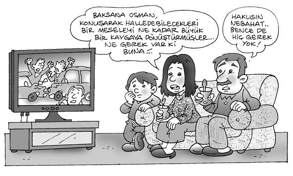
Evle ilgili sorumlulukların bir kısmını üstlenmelerini sağlayın. Çok küçük dahi olsalar onların yapabileceği ufak tefek işler her zaman bulunabilir. Onlar büyüdükçe sorumlu oldukları daha fazla işleri olacaktır. Böylece, çokça şikâyet edilen “sorumsuz çocuklar” yetiştirmenin önü alınmış olacaktır.
2) Örnek Bir Uygulama: Gazeteler Yoluyla Karakter Eğitimi
Buraya kadar sırayla karakter eğitiminin niçin gerektiği, temel stratejiler ve ailelere bazı öneriler üzerinde durduk. Şimdi ise karakter eğitiminin uygulama boyutundan bir örnek ile çalışmamızı tamamlayacağız. Aileler, karakter eğitimini hayatın her boyutuna yansıyan bir bütün olarak düşünmelidirler. Burada anlatılan etkinlikleri bu çerçevede ele alıp uygulamalarını özellikle tavsiye ederiz. Kısaca, karakter eğitimi bizzat hayatın içinde olmalıdır.
Evde iyi davranışlara modellik yapın. Komşusunun haklarına saygı gösteren, başkalarının arkalarından konuşmayan ebeveynler, adalet veya sorumluluğa dair çocuklarıyla konuştuklarında elbette daha etkili olacaklardır. Kendinize ve ailenize yüksek ahlaki standartları hedef edinin.
Bu örnek uygulamada, gazetelerdeki haberlerden yararlanarak; saygı, sorumluluk, yardımseverlik, doğruluk, hoşgörü, cesaret ve adalet gibi değerleri çocuklarımıza nasıl aktarabileceğimizi gösteren etkinlikler yer almaktadır.
a) Saygı
Çocuğunuzla birlikte gazetenizin spor sayfasını inceleyin. Önce siz bir sporcunun fotoğrafını seçin ve ona niçin saygı duyduğunuzu açıklayın. Daha sonra çocuğunuz aynı şeyi yapması için teşvik edin.
Çocuğunuzla birlikte gazetedeki karikatürleri ve çizgi romanları inceleyin. Teşekkür etmek, başkasının malını kollayıp gözetmek, bir şeyleri paylaşmak, karşısındakini dinlemek gibi saygı ifade eden davranışları birlikte tespit edin.
b) Sorumluluk
Çocuğunuza aile büyüklerinden biriyle şimdiye kadar aldığı sorumluluklarıyla ilgili bir “söyleşi” yapmaları konusunda yol gösterici olun. Birlikte sorular hazırlayın. Söyleşi bitince onu bir gazetede sunulacak tarzda düzenlemesini isteyin. Yaptıklarını bir aile toplantısında paylaşın veya öğretmeniyle iş birliğine geçerek okulda sunmasına yardımcı olun.
Çocuğunuzla “Sana nasıl davranılmasını istiyorsan başkalarına da öyle davran.” kuralı hakkında konuşun. Daha sonra çocuğunuzdan, gazetelerden bu kuralın lehinde veya aleyhinde olan haberler bulmasını isteyin ve bunları birlikte konuşun.
c) Yardımseverlik
Çocuğunuzla birlikte gazetenizi yardıma ihtiyacı olan birileri olup olmadığını görmek için inceleyin. Çocuğunuzun ilgisini çeken bir konu varsa o haberi okuyun ve aile olarak bu konuda neler yapabileceğinizi konuşun.
d) Doğruluk
Çocuğunuzdan, doğru ya da yanlış davranış içeren bir haberi gazeteden bulmasını isteyin. Bu gerçek durumu kullanarak çocuğunuzla doğruluk hakkında konuşun. Daha sonra çocuğunuzdan bir haberde olması gereken 5 N (ne, nerede, ne zaman, nasıl, niçin) ve 1 K (kim) sorularının cevabını içeren bir biçimde bu haberi kendi kelimeleriyle yeniden yazmasını isteyin.
e) Hoşgörü
Gazeteleri kullanarak çocuğunuzdan farklı özelliklere sahip kimselerin fotoğraflarını kesmesini isteyin. Aynı zamanda çeşitli kültürleri, dinleri, anlayışları temsil eden fotoğrafları da toplasın. Çocuğunuzla bu fotoğraflar üzerinden insanların farklılıkları üzerine konuşun. Bu etkinliği de çocuğunuzun öğretmeniyle iş birliğine girerek okul ortamında düzenleyebilir veya sonlandırabilirsiniz.
Çocuğunuzla birlikte gazetelerden çocuğunuzun ilgi, özellik ve yeteneklerini içeren kelime, resim ve semboller kesin. Bunları bir kartona yapıştırın. Daha sonra çocuğunuzu aynı etkinliği istediği başka biriyle yapması için teşvik edebilirsiniz.
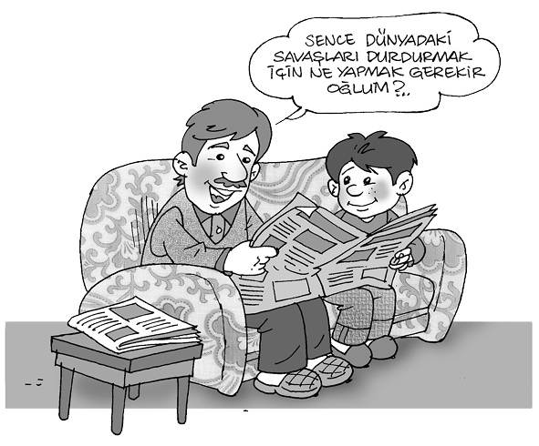
f) Cesaret
Çocuğunuzdan, cesaret sergileyen kişi veya grupların hikâyelerini anlatan yazıları gazetelerden bulmasını isteyin. Bu haberlerde geçen kişileri, mesleklerini ve niçin cesur olarak tanımladıklarını bir dosya kâğıdına tablo biçiminde çıkarmasını isteyin. Daha sonra bunlar hakkında birlikte konuşun.
g) Adalet
Çocuğunuzdan, ülkeler arasındaki anlaşmazlıklarla ilgili gazetede bir haber bulmasını isteyin. Daha sonra haberde adı geçen ülkeler hakkında araştırma yapmasını sağlayın. Ülkelerin başkentlerini, liderlerini, konumlarını, aralarındaki sorunları ve adil bir çözüm için çocuğunuzun kendi önerilerini içeren bir haber hazırlamasına yardımcı olun.
Çocuğunuz gazetede yanlı davranıldığını düşündüğü bir haberden bahsettiğinde, onunla niçin böyle düşündüğü konusunda konuşun. Bu konuda gazetenin ‘okur köşesi’ne bir mektup yazmasına yardımcı olun.
KAYNAKÇA
DeRoche, E. F., Sullivan, B. L., Dee Garrett, S. (1999),
Character Matters: Using Newspapers to Teach Character,
http://www.usethenews.com adresinden 24 Ekim 2001 tarihinde indirilmiştir.
Hoffman J. B., Lee, A.R. (t.y), Character Education \workbook: a “how-to” Manualfar School Boards, Administrators Community Leaders.
http://www.charactercounts.org web. adresinden 23 Mayis 2002 tarihinde indirilmiştir.
Lickona, T. (1991), Educating for Character: How Oıır Schools Can Teach Respect and Responsibilily, New York: Bantam Books.
Ryan, K. Bohlin, K. E. (1999), Building Character in Schools, San Francisco: Josey Bass Publishers.
1 Aclûnî, Keşfu’l-Hafâ, C. 1, s. 196, H. 1351, Beyrut, 3. baskı.
2 M. Yusuf Kandehlevî, Hayatu’s-Sahabe, C. 1, s. 31; Kenzü’l-Ummâl, C. IV, s.32.
3 Kandehlevî, a.g.e., s. 30.
4 Pierre Bouvet, Çocukta Din Duygusu, Niçin Allah’a İnanıyoruz, C. II, İstanbul 1981, s. 107.
5 Kandehlevî, a.g.e., s. 61.
6 Kandehlevî, a.g.e., C. I, s. 65.
7 Pierre Bouvet, Çocukta Din Duygusu, Niçin Allah’a İnanıyoruz, C. II, İstanbul 1981, s. 107.
8 J. J. Rousseau, Emile, İstanbul 1966, s. 194.
9 Bu konular için bkz. A. T. Jersild, Çocuk Psikolojisi, (çev. Gülseren Günce), s. 563; Robinson ve Arkadaşları, Psikoloji ve Yeni Eğitim, (çev. H. Tan), C. 1, s. 74; Atalay Yörükoğlu, Çocuk Ruh Sağlığı, s. 78.
10 Kerim Yavuz, Çocukta Dinî Duygu ve Düşüncenin Gelişmesi, DİB Yay., Ankara 1983, s. 42.
11 Psikolojiye Giriş, (çev. Komisyon), Ankara 1981, s. 59.
12 Gülseren Günce, “Çocukların Din Eğitimi” (Tebliğ), Millî Eğitim ve Din Eğitimi (Ayd. Ocağı İlmî Semineri), 1981, s. 341.
13 Yurdagül Konuk, Okul Öncesi Çocuklarda Din Duygunun Gelişimi ve Eğitimi, Ankara 1994, s. 77.
14 Buhari, (Zübdetü’l-Buharî), Hadis No: 1454.
15 M. Emin Ay, Çocuklarımıza Allah’ı Nasıl Anlatalım, İstanbul 1994, s. 110.
16 Hicr Sûresi, Ayet 56-57.
17 Naziat Sûresi, Ayet 40.
18 Yunus Sûresi, Ayet 62-65.
19 J. Chevalier, Pascal, (çev. M. Toprak), s. 74.
20 Fazlur Rahman, İslam, (çev. M. Aydın), M. Dağ, s. 304.
21 Heysemî, C. VIII, s. 156; Hayatu ‘s-Sahabe, C. III, s. 46.
22 Buharî, el-Edeb, s. 56.
23 Heysemî, C. VIII, s. 155.
24 Heysemî, C. IX, s. 179; İbn-i Hanbel, Müsned, C. V, s. 51
25 Buharî, C. II, s. 887.
26 Heysemî, C. VIII, s. 156.
27 Heysemî, c. VIII, s. 158.
28 Buharî, Ezan, 64 (1, 161).
29 Müslim, M. Sofuoğlu, C. VII, s. 198.
30 Alexis Carrel, “Allah’a İnanmaya Su ve Hava Kadar Muhtacız”, Niçin Allah’a İnanıyoruz (çev. İ. S. Eröz), İstanbul 1983, s. 61.
31 P. A. Sorakin, Çağdaş Sosyoloji Teorileri, (çev. Raşit Öymen), Ankara 1974, s. 210.
32 Kasas Sûresi, Ayet, 60.
33 Fecr Sûresi, Ayet, 27-30.
34 Bakara Sûresi, Ayet 201.
35 Kasas Sûresi, Ayet 76-77.
36 Ahzab Sûresi, Ayet 43.
37 Enfal Sûresi, Ayet 12.
38 Bakara Sûresi, Ayet 177.
39 Şems Sûresi, Ayet 7-10.
40 Bakara Sûresi, Ayet 38; Araf Sûresi, Ayet 20, 22, 23; Taha Sûresi, Ayet 121-123.
41 Y. Kemal Beyatlı, Aziz İstanbul, İstanbul 1969, s. 126.
42 Nur Sûresi, Ayet 45, ayrıca bkz. Rahman Sûresi, Ayet 3-4, 14-15, İbrahim Sûresi, Ayet 19.
43 Toshihiko İzutsu, Kur’an’da Allah ve İnsan (çev. S. Ateş), s. 123.
44 İzutsu, a.g.e., s. 125.
45 Kamer Sûresi, Ayet 49, Ra’d Sûresi, Ayet 9, ayrıca bkz. Al-i İmran Sûresi, Ayet 20, Kasas Sûresi, Ayet 68, Yunus Sûresi, Ayet 107, Fatır sûresi, Ayet 2.
46 Hadid Sûresi, Ayet 22, 23.
47 Hicr Sûresi, Ayet 56-57.
48 Yusuf Sûresi, Ayet 87.
49 M. Akif, Safahat, İstanbul 1966, s. 209.
50 Al-i İmran Sûresi, Ayet 159-160.
51 Aliya İzzetbegoviç, Doğu ve Batı Arasındaki İslam, (trc. Salih Şaban), İstanbul 1993, s. 309.
52 Buharî, C. 11, s. 887.
53 David Carroll, Çocuğun Ruhsal Eğitimi, (çev. Semra Tuna), İzmir 2000, s. 105.
54 İbrahim Sûresi, Ayet 7, Nisa Sûresi, Ayet 147.
55 Bakara Sûresi, Ayet 153.
56 İbn-i Hanbel, Müsned, C. V, s. 364, 371.
57 Halis Ayhan, Eğitime Giriş ve İslamiyet’in Eğitime Getirdiği Değerler, s. 315.
58 Bkz. M. Nuri Yardım, Tanzimattan Günümüze Edebiyatçılarımızın Çocukluk Hatıraları, İstanbul 1986.
59 Bakara Sûresi, Ayet 183, 185.
60 Tecrid-i Sarih Tercümesi, C. VI, s. 287.
61 Ş. Oğuzkan, G. Oral, Okul Öncesi Eğitim, s. 13.
62 M. Çamdibi, Şahsiyet Terbiyesi ve İmam Gazali, s. 15.
63 A. T. Jersild, Çocuk Psikolojisi, s. 7.
64 M. Çamdibi, Din Eğitiminin Temel Meseleleri, s. 61.
65 M. Çamdibi, Şahsiyet Terbiyesi ve İmam Gazali, s. 113.
66 N. El-Attas, İslamî Eğitim, s. 17.
67 Ahzab, Ayet 33/72.
68 Beled, Ayet 90/8-10.
69 M. Vehbi, Hülasatü’l-Beyan fi Tefsîri’l-Kur’an, C. XV, s. 6456.
70 Şems, Ayet 91/8.
71 Ayetteki “fücur”dan kasıt, fiilin taşıdığı kötülük; takvadan kastedilen ise, iyilik özelliğidir. Buna göre ayet: “İyilik ve kötülüğü insana ilham ettik, dolayısıyla iyilik yapmasını, kötülükten kaçınmasını telkin ettik.” anlamındadır. (H. Yazır, Hak Dini Kur’an Dili, C. VIII, s. 5858).
72 İnsan, Ayet 76/2-3.
73 F. Razî, Tefsîr-i Kebîr, C. XXX, s. 238.
74 Kıyame, Ayet 75-36.
75 Bakara, Ayet 2/286.